تقديم التطبيق
تعرّف على السليم ووظائفه الأساسية
السليم حلّ متكامل لإدارة النشاط التجاري، مصمّم لتجارة التجزئة والصيدليات بدون وصفة ومؤسسات المطاعم. يجمع في واجهة ويب واحدة كل الأدوات اللازمة لتسيير نشاطكم اليومي: البيع، الشراء، المخزون، الصندوق، التقارير والمزيد.
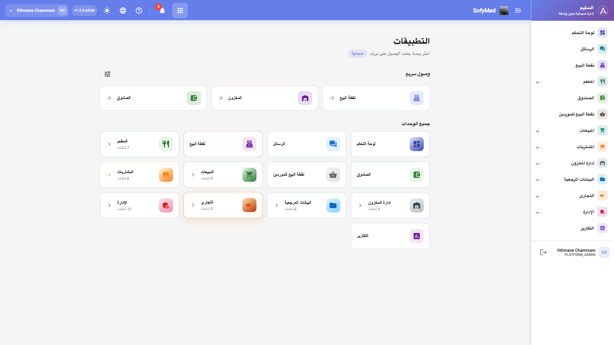
1.1 الوظائف الرئيسية
| الوحدة | الوصف |
|---|---|
| Hub | مركز التطبيقات: بلاطات وصول سريع إلى الوحدات (المبيعات، المشتريات، المخزون، إلخ) حسب صلاحياتكم |
| لوحة التحكم | نظرة تركيبية على مؤشرات الأداء (رقم المعاملات، الهوامش، أبرز المنتجات، مبيعات اليوم) |
| نقطة البيع (POS) | صندوق لمسي واحد (بيع وشراء): بلاطات، تذكرة، لوحة تحصيل، دفع مختلط، ماسح الرمز الشريطي / GS1، شاشة العميل، قفل برقم PIN |
| البيع | دورة كاملة: عرض سعر → طلب → إذن تسليم → فاتورة → دفع |
| الشراء | دورة كاملة: مقترح → طلب → استلام → فاتورة مورد → دفع |
| المخزون والجرد | متابعة آنية، مواقع / مستودعات، تحويلات، جرد فعلي، تنبيهات النفاد |
| الصندوق | فتح الصندوق وإغلاقه، حركات النقد، تقرير الإقفال |
| التقارير | تقارير البيع والشراء والهامش والمخزون، تصدير CSV / Excel / PDF |
| HoReCa | مخطط القاعة، طلبات حسب الطاولة، شاشة المطبخ (KDS)، الحجوزات، الإحصائيات، استدعاء النادل بـ QR، لوحة التوصيل (هاتف / Glovo / Uber) |
| تطبيق الجوال | عرض المدير على الهاتف (/m): رقم معاملات اليوم، الصندوق، التنبيهات، الاختصارات — PWA أو APK أندرويد |
| الرسائل | مراسلة داخلية بين مستخدمي مؤسستكم |
| الإعدادات | تهيئة الشركة، المستخدمون، الأدوار، الصلاحيات، الترخيص، النسخ الاحتياطي لقاعدة البيانات |
1.2 الأدوار وملفات المستخدمين
يدير السليم عدة مستويات وصول. يمكن للمسؤول أن يمنح كل مستخدم دورًا وفق مسؤولياته.
| الدور | الوصف | الوصول النموذجي |
|---|---|---|
| مسؤول | وصول كامل إلى جميع الوظائف والإعدادات | الكل |
| مدير | الإشراف على المبيعات والمشتريات والتقارير والمخزون | البيع، الشراء، المخزون، التقارير |
| صيدلي / بائع | عمليات البيع واستشارة المخزون | POS، البيع، المخزون (قراءة) |
| أمين الصندوق | التحصيل وعمليات الصندوق | POS، الصندوق |
| المطبخ (KDS) | استشارة الطلبات في المطبخ وتحديثها | شاشة المطبخ فقط |
| مسؤول المنصّة | دور تقني SaaS: التهيئة العامة (مثل بريد النظام)، دون وصول مهني افتراضي | إعدادات النسخة، وليس مسار البيع/الشراء المعتاد |
تسجيل الدخول والتنقّل
كيف تدخلون إلى التطبيق وتجدون طريقكم فيه
لقطات للتوثيق: لتفادي نافذة الجولة الإرشادية (لوحة التحكم، POS)، افتحوا التطبيق بإضافة ?noTour=1 في عنوان URL مرة واحدة على الأقل في جلسة المتصفح. يستخدم سكربت Playwright في مجلد docs/scripts إطار عرض 1920×1080، ويضيف noTour=1، ويعيد لشاشات POS تحميل أول معاملة من السجل الحديث (يلزم وجود فاتورة بيع / شراء واحدة على الأقل حسب الشاشة، وفق نوع المستند الحالي في POS).
2.1 تسجيل الدخول
افتحوا متصفح الويب (Chrome أو Firefox أو Edge…) وأدخلوا عنوان نسخة السليم لديكم (يوفّره المسؤول). تظهر صفحة تسجيل الدخول تلقائيًا.
إدخال بيانات الدخول
أدخلوا عنوان البريد الإلكتروني وكلمة المرور في الحقول المخصّصة.
النقر على «تسجيل الدخول»
اضغطوا الزر أو استخدموا مفتاح Entrée في لوحة المفاتيح.
الدخول إلى التطبيق
إذا كانت بياناتكم صحيحة، تُوجَّهون إلى الصفحة الرئيسية (شبكة Hub) أو إلى أول صفحة يسمح بها ملفّكم. تبقى لوحة التحكم متاحة من Hub أو من القائمة الجانبية. تظهر قائمة التنقّل الجانبية مطوية افتراضيًا بعد تسجيل الدخول (أو التسجيل): استخدموا زر القائمة (menu / menu_open) في الشريط العلوي لإظهارها أو إخفائها؛ يُحفظ اختياركم على هذا الجهاز.
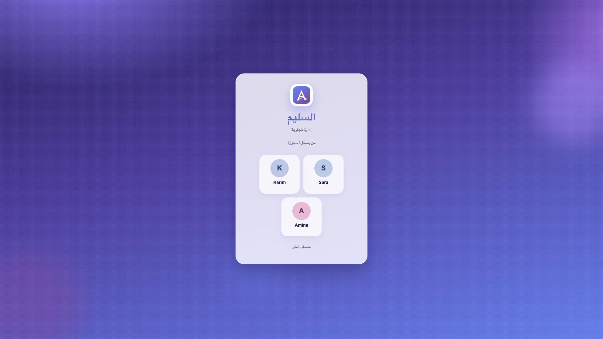
على جهاز سبق استخدامه، قد تعرض الصفحة الملفات المحفوظة (الحرف الأول والاسم). المسوا وجهًا: إن وُجد رقم PIN للصندوق لهذا الحساب يُفتح لوحة أرقام؛ وإلا أدخلوا كلمة المرور. حساب آخر يعيد نموذج البريد / كلمة المرور.
2.2 نسيت كلمة المرور
إذا نسيتم كلمة المرور، انقروا الرابط «نسيت كلمة المرور؟» أسفل نموذج تسجيل الدخول.
إدخال عنوان البريد الإلكتروني
أدخلوا البريد المرتبط بحسابكم في السليم.
استلام رمز OTP
يُرسل إليكم رمز تحقق لمرة واحدة (OTP) عبر البريد الإلكتروني.
إدخال رمز OTP
أدخلوا الرمز المستلم في صفحة التحقق.
تعيين كلمة مرور جديدة
اختاروا كلمة مرور آمنة ثم أكّدوها.

2.3 الواجهة العامة
تجمع واجهة السليم شريط تنقّل جانبي (القائمة، على اليسار بالفرنسية — وعلى اليمين بالعربية RTL)، وشريط أدوات علوي، ومنطقة المحتوى الرئيسية.
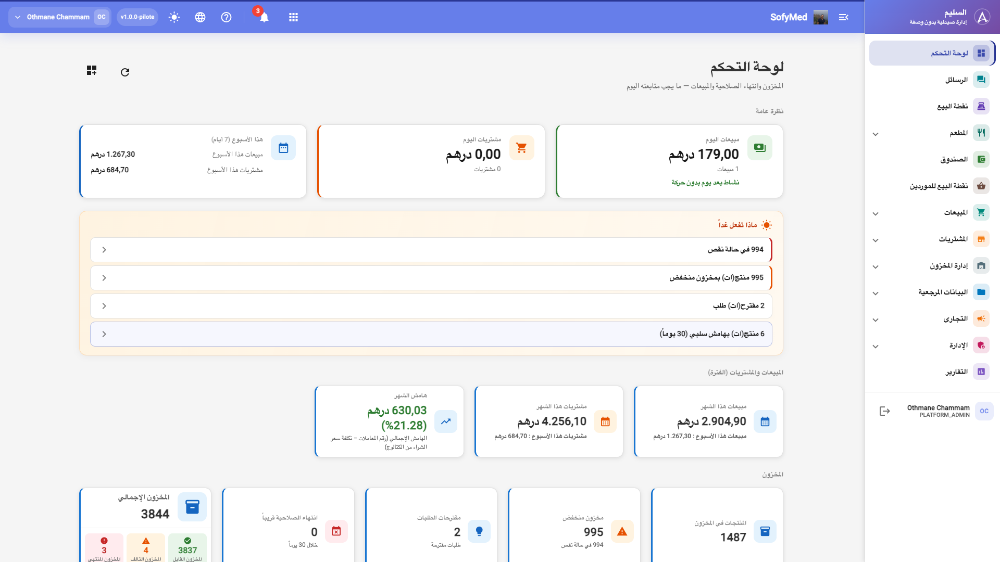
عناصر الواجهة
- القائمة الجانبية: الوصول إلى الوحدات (مجمّعة حسب المواضيع: المبيعات، المشتريات، البيانات المرجعية، إلخ). يمكن إخفاؤها أو إظهارها عبر الزر المخصّص في شريط الأدوات؛ بعد تسجيل الدخول أو تغيير المستخدم تُخفى افتراضيًا لإفساح المجال للمحتوى.
- شريط الأدوات (الرأس): شعار المؤسسة أو اسمها، ثم في الجهة المقابلة: أيقونة التطبيقات (العودة إلى Hub)، مركز الإشعارات / التنبيهات (الجرس)، قائمة المساعدة (الجولة الإرشادية، التنقّل السريع، دليل الاستخدام المدمج)، أيقونة الشمس أو القمر (اختيار السمة الفاتحة أو الداكنة أو التلقائية)، اللغة (FR / EN / AR)، تغيير المستخدم، قائمة الحساب (كلمة المرور، الإعدادات، وضع الكشك، الأوضاع المقفلة، تسجيل الخروج). على الشاشات الصغيرة تُجمع عدة إجراءات تحت قائمة المزيد (more_vert).
- اللافتات: حسب نشركم، قد تظهر أشرطة (تجربة، ترخيص يجب تفعيله، ترخيص منتهٍ، وضع دون اتصال)
- شريط سياق المستند: عند استشارة مستند بيع أو شراء، يذكّر شريط ملوّن بالمسار (بيع / شراء) ونوع المستند والإجراءات السريعة
- منطقة المحتوى: تعرض الصفحة أو الوحدة المختارة
- أسفل القائمة الجانبية: تذكير بالمستخدم المتّصل وزر تسجيل الخروج
2.4 Hub (مركز التطبيقات)
Hub هو شبكة الاستقبال: تمثّل بلاطات ملوّنة عائلات الوظائف (المبيعات، المشتريات، المخزون، التقارير، إلخ). انقروا بلاطة أصل لعرض الوحدات الفرعية، أو بلاطة بسيطة لفتح صفحة مباشرة (مثل لوحة التحكم أو الصندوق).
تعيد أيقونة التطبيقات (apps) في شريط الأدوات دائمًا إلى Hub. تعتمد البلاطات المعروضة على صلاحياتكم وعلى معلمة تعطيل إدارة المخزون في المؤسسة بالنسبة للمخزون.
في أعلى Hub، يعتمد شريط إجراءات سريعة (الصندوق، POS، التنبيهات…) على نوع المؤسسة.
يقود شريط «فتح تطبيق المدير» إلى عرض الهاتف /m (الفصل 16).

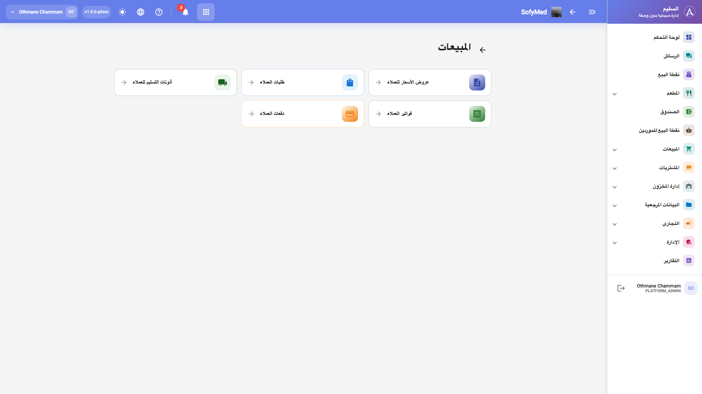
2.5 سمة العرض (فاتح أو داكن)
يمكنكم تكييف التطبيق مع راحتكم البصرية أو إضاءة المحل. انقروا أيقونة الشمس أو القمر في شريط الأدوات (أو افتحوا قائمة المزيد على الهاتف أو الجهاز اللوحي، ثم بند السمة).
- فاتح: خلفية فاتحة ونص داكن.
- داكن: خلفية داكنة ونص فاتح.
- النظام: يتبع السليم إعداد النهار / الليل في المتصفح أو الجهاز؛ إذا غيّرتم سمة Windows أو macOS، يمكن للتطبيق أن يتبعها تلقائيًا.
يُحفظ اختياركم على هذا الجهاز: عند إعادة الاتصال من المتصفح نفسه، تعود السمة كما تركتموها.

2.6 قائمة المساعدة: الجولة الإرشادية، التنقّل السريع، الدليل
يفتح زر المساعدة (علامة استفهام) قائمة بثلاثة مداخل مفيدة يوميًا:
- اكتشاف الواجهة: جولة قصيرة في الشاشات الرئيسية (لوحة التحكم، POS، إلخ). يمكنكم مغادرتها في أي وقت.
- التنقّل السريع (Ctrl+K): مربع حوار للانتقال سريعًا إلى وحدة بكتابة بضع أحرف.
- دليل الاستخدام: يفتح هذا الدليل داخل التطبيق، عمليًا لاستشارة إجراء دون مغادرة جلستكم. يتبع الدليل لغة الواجهة (الفرنسية أو العربية). زر تصدير PDF يحفظ الدليل بهذه اللغة نفسها: في نافذة الطباعة اختاروا «حفظ كملف PDF».
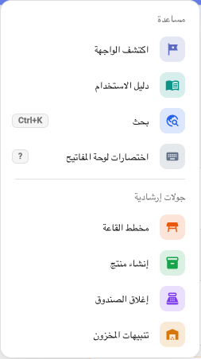
2.7 البحث الشامل (Ctrl+K)
اضغطوا Ctrl+K (أو ⌘K على Mac) من أي صفحة لفتح لوحة البحث. اكتبوا بضع أحرف للعثور فورًا على:
- منتج بالاسم أو الرمز الشريطي
- عميل أو مورد
- فاتورة بالرقم
- وحدة من التطبيق
تنقّلوا بمفتاحي ↑ ↓، أكّدوا بـ Entrée، وأغلقوا بـ Échap.
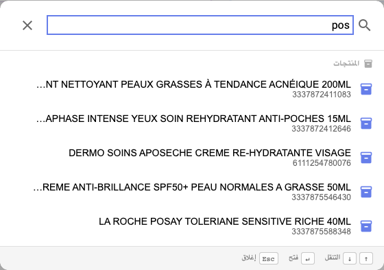
2.8 اختصارات لوحة المفاتيح
اضغطوا ? من أي صفحة (خارج حقل إدخال) لعرض قائمة الاختصارات المتاحة. يمكنكم أيضًا الوصول إليها عبر قائمة المساعدة → اختصارات لوحة المفاتيح (?).
| الاختصار | الإجراء |
|---|---|
| Ctrl+K | فتح البحث الشامل |
| ? | لوحة اختصارات لوحة المفاتيح |
| Échap | الخروج من وضع الكشك / إغلاق الحوارات |
| F1 | مساعدة سياقية لـ POS |
| Ctrl+Entrée | تأكيد نموذج |
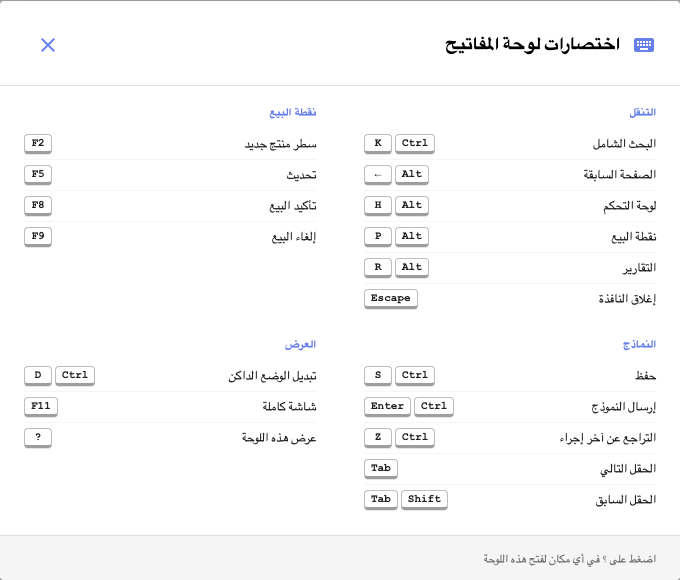
2.9 الخطوط القابلة للضبط
يمكنكم ضبط حجم النص من قائمة السمة (أيقونة اللوحة أعلى الجهة المقابلة). تتوفر ثلاثة مستويات:
- مضغوط: نص أصغر ومعلومات أكثر على الشاشة — مناسب للطاولات الكبيرة والشاشات الواسعة.
- عادي: الحجم القياسي الموصى به.
- كبير: نص أكبر — مناسب لإتاحة الوصول أو الشاشات البعيدة.
يُحفظ الاختيار تلقائيًا ويُطبَّق على التطبيق كله.
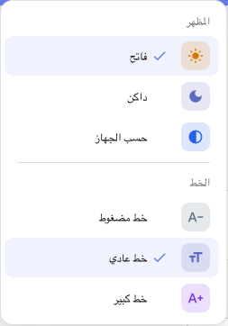
2.10 الأوضاع المقفلة (أمين الصندوق / النادل)
إضافة إلى وضع الكشك (ملء الشاشة، خروج حر — انظر §6.4)، تقترح قائمة الحساب (أيقونة 👤) وضعين مقفلين مخصّصين للعاملين في القاعة أو الصندوق. يتطلّب الخروج كلمة مرور مدير (إلا إذا كان مسؤول أو مدير أو صيدلي متّصلًا أصلًا).
| الوضع | الشاشات المسموحة | الخروج |
|---|---|---|
| وضع أمين الصندوق المقفل | POS والصندوق فقط (دون قائمة جانبية) | Échap أو زر الخروج → كلمة مرور المدير |
| وضع النادل المقفل | مخطط القاعة، الطاولات، الكاونتر (جرس الإشعارات ظاهر) | نفسه |
| وضع الكشك | ملء الشاشة بحرية | دون رمز PIN |
يرفع تسجيل الخروج القفل أيضًا. تمنع هذه الأوضاع أمين الصندوق أو النادل من فتح الإعدادات أو التقارير أو وحدات أخرى أثناء الخدمة.
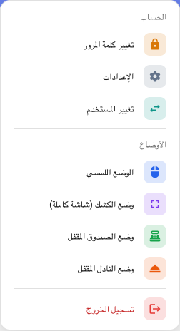
2.11 الوضع اللمسي
يكبّر الوضع اللمسي الأزرار وصفوف الجداول والحقول (أهداف نحو 48 بكسل) في التطبيق كله — القوائم والفواتير والمخزون والقائمة — وليس الصندوق فقط. وهو مفعّل افتراضيًا على كل جهاز (صندوق أو لوحي أو مكتب).
- لوحة المفاتيح واللوحات الرقمية (رمز PIN، OTP، الصندوق، إغلاق الصندوق، الكميات) بنفس الأسلوب في كل التطبيق: مفاتيح فاتحة، أهداف 48 بكسل، إجراءات باللون الأساسي.
- قائمة الحساب (👤) → خروج من الوضع اللمسي لعرض مضغوط بالفأرة على هذا الجهاز فقط.
- نفس القائمة → الوضع اللمسي لإعادة تفعيله.
لوحة التحكم
نظرة عامة على مؤشرات أدائكم الرئيسية
بعد تسجيل الدخول تصلون عادة إلى Hub (انظر الفصل 2). تُفتح لوحة التحكم من بلاطة في Hub أو من القائمة الجانبية. وتقدّم نظرة تركيبية فورية على حالة نشاطكم التجاري.
عرض بعد التمرير: أسفل لوحة التحكم (الصفحة نفسها الواردة في شكل الفصل 2 «الواجهة العامة»)، لإظهار الرسوم والكتل الواقعة تحت أول ارتفاع شاشة. تُنتج اللقطة بإطار عرض 1920×1080 بعد تمرير تلقائي أثناء توليد الصور.
المؤشرات المعروضة
| المؤشر | الوصف |
|---|---|
| رقم معاملات اليوم | مجموع المبيعات المحصّلة اليوم |
| مبيعات الشهر | تراكم المبيعات خلال الشهر الجاري |
| الهامش الإجمالي | الفرق بين رقم المعاملات وتكلفة المشتريات |
| العملاء النشطون | عدد العملاء الذين أجروا مشتريات حديثة |
| أبرز المنتجات | المنتجات الأكثر مبيعًا في الفترة |
| المبيعات حسب الفئة | توزيع رقم المعاملات حسب عائلة المنتجات (رسم بياني) |
| تطوّر المبيعات | رسم لتطوّر يومي أو شهري |
| السلف الحديثة | قائمة آخر العربون المستلم |
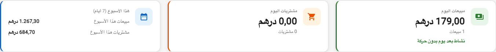
3.1 لوحة قابلة للتخصيص
يمكنكم اختيار الودجات المعروضة على لوحة التحكم بالنقر على أيقونة تخصيص (🔧) بجانب زر التحديث.
تنفتح لوحة بقائمة كل الودجات المتاحة:
- مؤشرات KPI — مبيعات/مشتريات اليوم، الهامش الشهري
- جلسة الصندوق — حالة الصندوق المفتوح
- المبيعات اليومية — رسم منحنيات على 30 يومًا
- المبيعات حسب الفئة — رسم دائري (فطيرة)
- أبرز المنتجات — ترتيب المنتجات الأكثر مبيعًا
- المبيعات مقابل المشتريات — مقارنة شهرية
- تنبيهات المخزون — منتجات نافدة أو منخفضة المخزون
- مقترحات الشراء — عدّاد إعادة التموين المطلوب اعتمادها
ضعوا العلامات أو أزيلوها بحرية. انقروا إعادة التعيين لاستعادة التهيئة الافتراضية. تُحفظ تفضيلاتكم تلقائيًا.
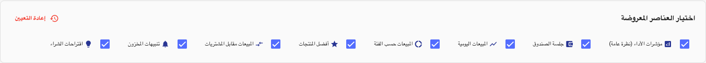
3.2 خطة العمل «ماذا تفعل غدًا»
تحت مؤشرات اليوم، تعرض لوحة التحكم قائمة مرتّبة «ماذا تفعل غدًا» عند وجود نقاط تستدعي الانتباه. تفتح كل سطر الشاشة المفيدة (الصندوق، المخزون، المنتهية، المستحقات، إلخ).
ترتيب الأولوية المعتاد:
- الصندوق مغلق
- نفاد المخزون
- انتهاء الصلاحية خلال 7 أيام
- مستحقات لأكثر من 30 يومًا
- مخزون منخفض
- منتجات بهامش سالب
- مقترحات شراء للمعالجة
/m، الفصل 16) خطة العمل هذه تمامًا.
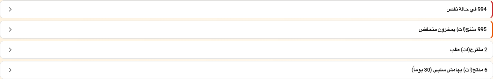
مرجع المنتجات
إدارة المنتجات والفئات ووحدات القياس
4.1 المنتجات
تتيح لكم قسم المنتجات إدارة كتالوجكم كاملًا: إنشاء المقالات وتعديلها والبحث عنها وحذفها.
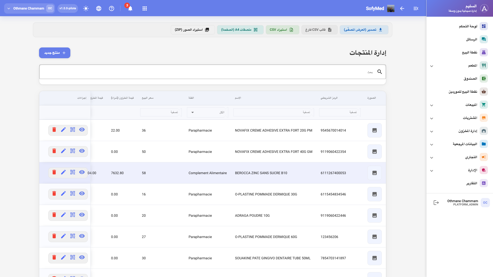
إنشاء منتج جديد
فتح النموذج
انقروا زر «+ منتج جديد» أعلى القائمة.
تعبئة المعلومات
أدخلوا الاسم، الرمز الشريطي (أو اتركوا التوليد التلقائي)، الفئة، الوحدة، أسعار الشراء والبيع، والحد الأدنى للمخزون.
إضافة صورة (اختياري)
استوردوا صورة للمنتج لتسهيل التعرّف عليه في POS.
الحفظ
انقروا «حفظ». يظهر المنتج فورًا في القائمة.
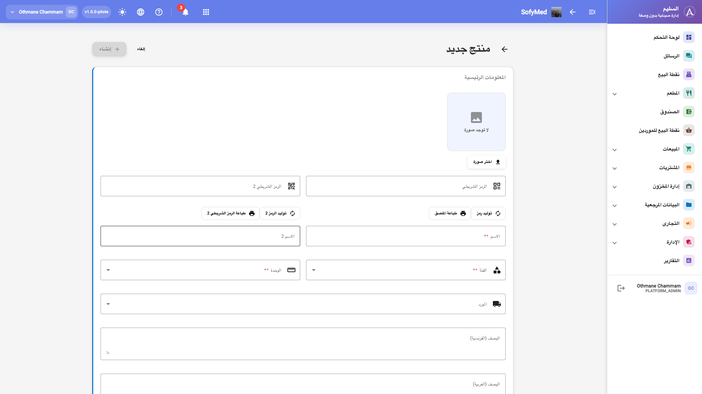
حقول المنتج
| الحقل | الوصف | مطلوب |
|---|---|---|
| الاسم | التسمية التجارية للمنتج | ✅ |
| المرجع / الرمز الشريطي | رمز تعريف فريد (EAN، QR…) | — |
| الفئة | عائلة المنتجات | ✅ |
| الوحدة | وحدة البيع (قطعة، كغ، لتر…) | ✅ |
| سعر الشراء (بدون ضريبة) | تكلفة الشراء من المورد | ✅ |
| سعر البيع (شامل الضريبة) | السعر المعروض للعميل | ✅ |
| حظر الخصم | يمنع خصم السطر في البيع (نسبة، مبلغ، سعر مفروض). يبقى خصم التذكرة الإجمالي ممكناً. معطّل افتراضياً. | — |
| حظر الإرجاع | يمنع إرجاع البيع (كميات مرتجعة على التذكرة أو الإشعار الدائن). تبقى مرتجعات الشراء ممكنة. معطّل افتراضياً. | — |
| حظر تعديل السعر | يمنع تعديل سعر البيع في الكتالوج من الصندوق (⋯ تعديل السعر). تبقى بطاقة المنتج قابلة للتعديل. معطّل افتراضياً. | — |
| TVA | نسبة الضريبة المطبّقة | — |
| الحد الأدنى للمخزون | عتبة التنبيه عند اقتراب النفاد | — |
| تاريخ انتهاء الصلاحية | إدارة المنتجات القابلة للتلف | — |
| الوصف | ملاحظات داخلية أو وصف مفصّل | — |
طباعة الملصقات
من قائمة المنتجات: زر ملصقات A4 (ملصق 50×30 مم لكل وحدة مخزون قابل للبيع في الصفحة، ويُتجاهل المخزون 0) وعلى كل سطر أيقونة الملصق للطباعة على رول واحد. من بطاقة المنتج: طباعة الرمز الشريطي الرئيسي أو الثانوي. ظهور السعر على الملصق يُضبط في الإعدادات العامة («السعر على الملصقات»).
الإضافات / خيارات المطبخ (HoReCa)
على بطاقة المنتج (دون المرور بتعديل)، تتيح بطاقة الإضافات / خيارات المطبخ إضافة إضافات (جبن، لحم مضاعف، درجة الطهي…) مع زيادة سعر اختيارية. تظهر هذه الخيارات بعدها في صندوق الطاولة أو الكاونتر. مخصّصة للملفات التي تدير مخطط القاعة (مدير، مسؤول).
4.2 الفئات
تتيح الفئات تنظيم كتالوجكم في عائلات منطقية (مثل: أدوية، مستحضرات تجميل، نظافة، مكملات غذائية…).
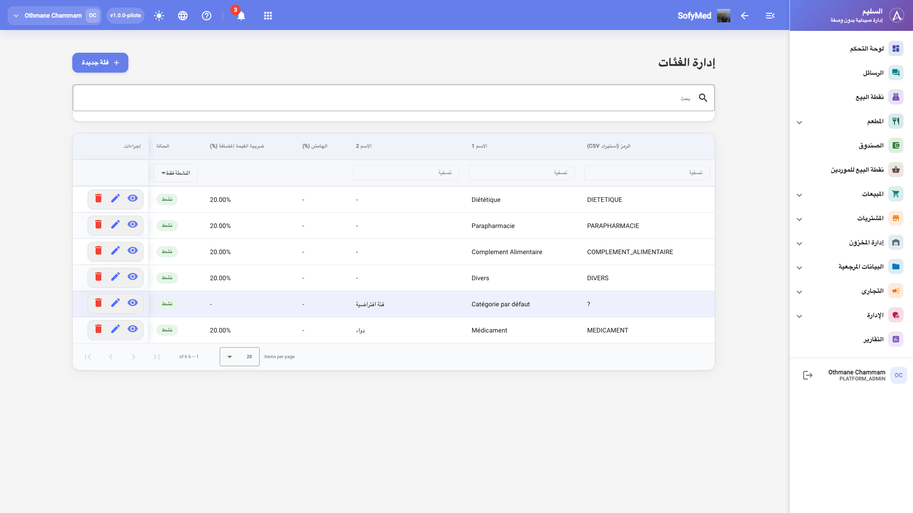
لإنشاء فئة، انقروا «+ فئة جديدة»، أدخلوا الاسم ثم أكّدوا. يمكنكم أيضًا تعديل فئة موجودة أو حذفها عبر أيقونات الإجراء على يسار كل سطر (أو يمينها حسب اللغة).
4.3 وحدات القياس
عرّفوا كل الوحدات المستخدمة في نشاطكم: قطعة، علبة، غرام، لتر، إلخ. تُختار هذه الوحدات عند إنشاء كل منتج.
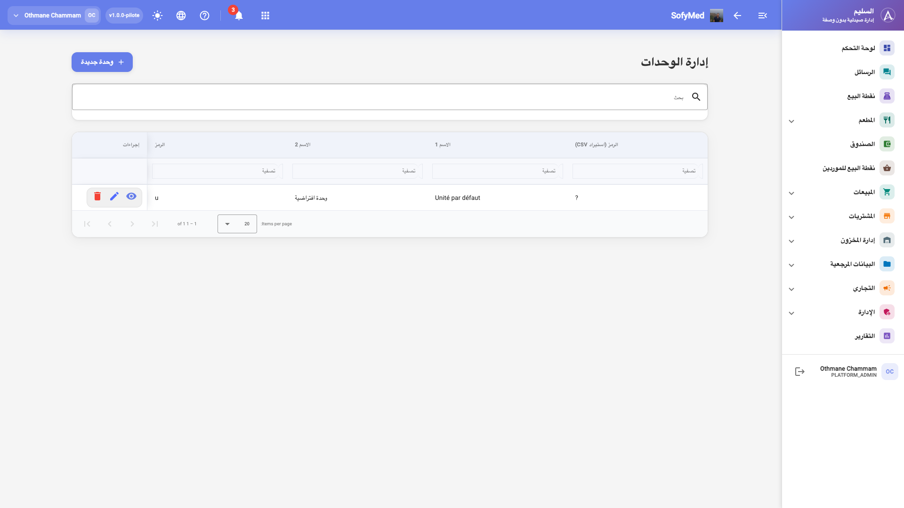
العملاء والموردون
إدارة دفتر عناوينكم التجاري
5.1 إدارة العملاء
يجمع قسم العملاء كل المعلومات عن المشترين لديكم: بيانات الاتصال، سجل المشتريات، الرصيد والسلف.
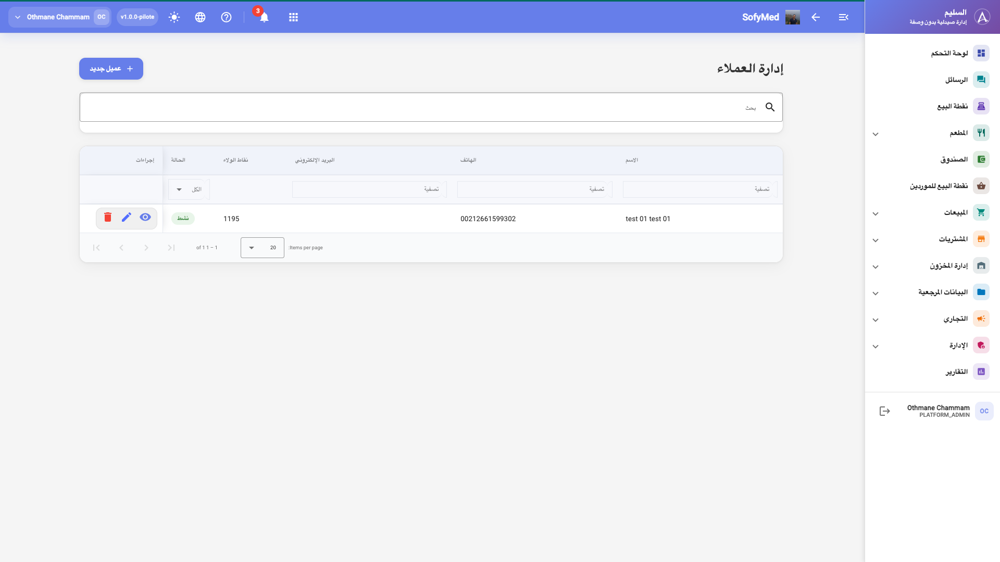
إنشاء عميل
انقروا «+ عميل جديد» واملأوا المعلومات التالية:
- الاسم / الاسم التجاري (إلزامي)
- الهاتف وعنوان البريد الإلكتروني
- العنوان البريدي
- شرط الدفع الافتراضي
- سقف الائتمان (0 = الائتمان غير مسموح؛ فارغ = دون سقف)
- ملاحظات داخلية
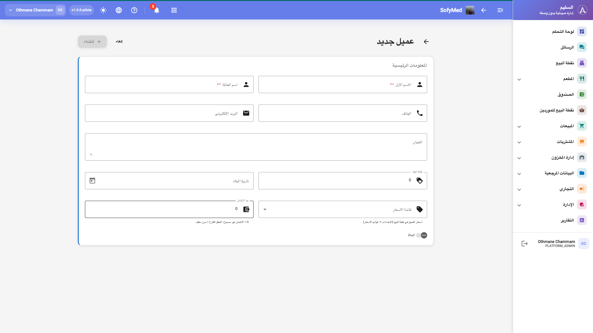
بطاقة العميل — التفصيل
بالنقر على عميل في القائمة تصلون إلى بطاقته التفصيلية التي تعرض:
- بياناته الكاملة
- سجل طلباته وفواتيره
- مدفوعاته المنفّذة ورصيده الجاري
- سلفه وعربونه
5.2 إدارة الموردين
يعمل قسم الموردين بالطريقة نفسها كقسم العملاء، لكن موجّهًا نحو شركاء التوريد لديكم.
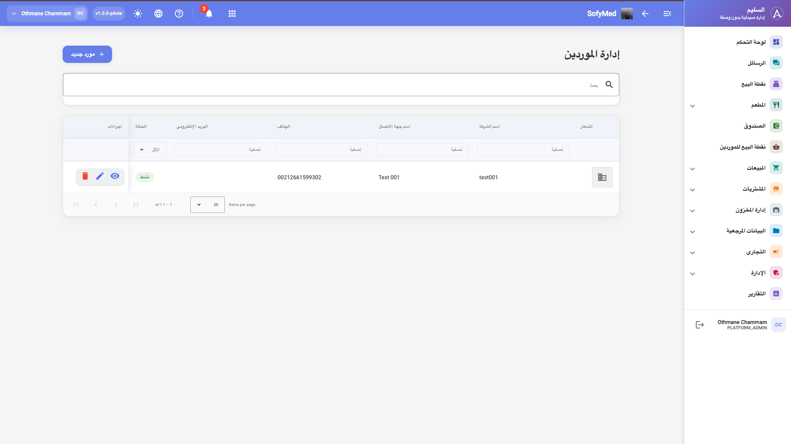
تشمل المعلومات الخاصة بالمورد:
- الاسم التجاري والاسم القانوني
- ICE ورقم السجل التجاري (المغرب)
- جهات الاتصال (هاتف، بريد إلكتروني)
- سجل المشتريات وفواتير المورد
- الرصيد المستحق وسجل المدفوعات
5.3 شروط الدفع
عرّفوا شروط الدفع المعيارية لتجارتكم (نقدًا، 30 يومًا، 60 يومًا صافيًا، إلخ) واربطوها بعملائكم ومورديكم.
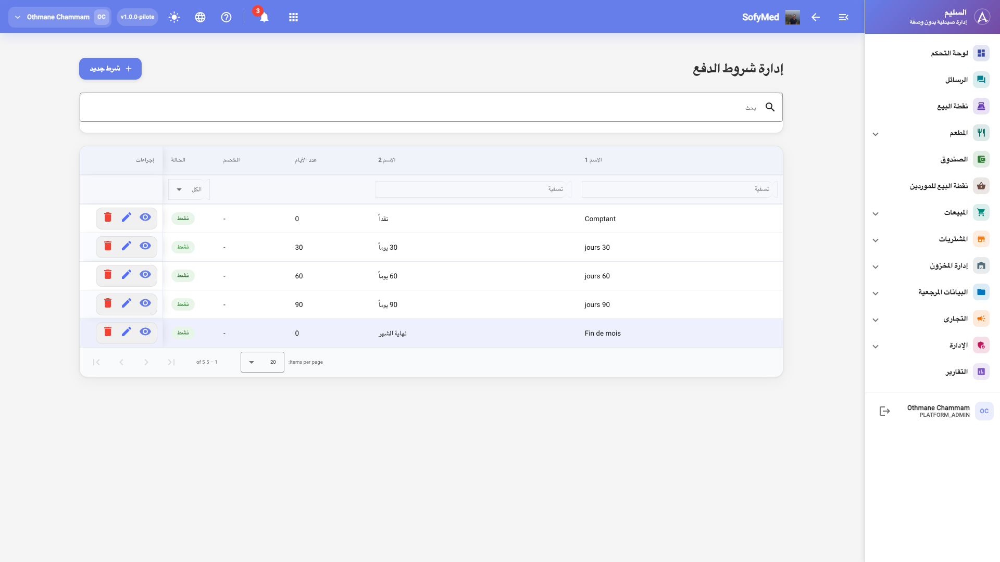
نقطة البيع (POS)
صندوق سريع للبيع والشراء
6.1 POS البيع
افتحوا نقطة البيع (/pos). يُفتح الصندوق بدون القائمة الجانبية للنظام
(لوحة التحكم مخفية): التصنيفات (الاسم + الاسم الثاني إن وُجد، مثل البلاطات) وبلاطات المنتجات يسارًا، التذكرة و
اللوحة (المقبوض، الكمية، الخصم) يمينًا. في الإعدادات → خيارات شاشة الصندوق (§15.9) يمكن إخفاء الكتالوج (التصنيفات والبلاطات): يبقى المسح والبحث بمحاذاة عرض التذكرة؛ من حرفين تظهر قائمة مؤقتة لاختيار المنتج وتتّسع التذكرة لليسار (أعمدة محاذاة وأزرار إجراءات ظاهرة). بدون سطر، تُظهر التذكرة شريحة العميل فقط (أو المورّد في POS الشراء) وتعمل اللوحة كآلة حاسبة (+ − × ÷ =)؛ عند إضافة منتج تعود إلى المقبوض / الكمية / الخصم. زر آلة حاسبة في الشريط العلوي (وفي قائمة ⋮) يفتح نافذة (+ − × ÷ =) دون إخفاء التحصيل؛ أغلقوها بالـ X أو الخلفية أو Escape. زر قائمة النظام يُعيد الشريط والقائمة.
على الهاتف أو الجهاز اللوحي العمودي، تُفتح التذكرة كورقة من شريط التذكرة. السجل (F8) في شريط الإجراءات العلوي
(وليس في رأس التذكرة). يمكن إضافة منتج نافد (مخزون قابل للبيع = 0):
تظهر شارة «نفاد»؛ عند التحصيل يطلب الحوار التأكيد رغم ذلك.
لوحة المفاتيح اللمسية تُفتح من أيقونة لوحة المفاتيح، لا عند التركيز فقط.
يعرض الشريط أيضًا تحديث وآلة حاسبة وقفل الصندوق (§6.11) واستعادة آخر تذكرة (F9) وإفراغ السلة (F10) — دون زر إفراغ ثانٍ في رأس التذكرة.
كل إضافة إلى التذكرة تُحفظ فورًا في المتصفح: بعد F5 يبقى زر استعادة آخر فاتورة في الشريط (التذكرة فارغة حتى تستعيدوا).

إجراء عملية بيع
اختيار المنتجات أو مسحها
المسوا بلاطة، أو امسحوا الرمز الشريطي (مسدّس USB: لا حاجة للمس الشاشة). رمز EAN يُلصق في البحث يُضاف وحده؛ يُفرَّغ الحقل ويعود المؤشر إليه. علامة X واحدة تمسح البحث (وليس X المتصفح الإضافي). على الهاتف أو الجهاز اللوحي، زر مسح (أيقونة الكاميرا) يفتح الكاميرا — يُخفى على صندوق 15–24 بوصة (مسدّس USB) ولا يشغّل المسدّس. صفّوا حسب التصنيف أو المفضّلة. فلتر متوفر مفعّل مسبقًا عند الفتح (§6.9): النفاد لا يظهر في البلاطات (المسح يبقى ممكنًا). زر مستخدم 90 ي (مطفي افتراضيًا) يُبقي فقط المنتجات المباعة مرة واحدة على الأقل خلال آخر 90 يومًا — الكتالوج كاملًا مع الصفحات، وليس فقط 12 منتجًا سريعًا.
ضبط الكميات
على التذكرة، الاسم يأخذ العرض كاملًا بجانب الصورة. أسفل: − / الكمية / + ثم المجموع ثم الإغلاق ثم ⋯، محاذاة من سطر إلى آخر. إذا أُخفي الكتالوج (§15.9)، يُحاذى البحث مع التذكرة؛ كل سطر يُحاذي الأعمدة (السعر، الكمية، المجموع) ويعرض أزرار الخصم والمرتجع والملاحظة والسعر (تبقى قائمة ⋯ في وضع الكتالوج). أو لوحة الكمية. لمس سطر يعرض لوحة الخصم و/أو الإرجاع الخاصة به (إن وُجدت) ويخفي لوحات المنتجات الأخرى. لمس السطر المحدد مرة أخرى يلغي تحديده. الخصم والإرجاع وخيارات المطبخ: زر ⋯ (وضع الكتالوج) أو أزرار السطر (كتالوج مخفي) — بنفس أسلوب اللغة / المظهر (§6.3).
اختيار عميل (اختياري)
شريحة العميل ظاهرة دائمًا على التذكرة. ابحثوا عن عميل واربطوه: الرصيد والسقف والولاء يظهرون عندها فقط (§6.10).
التحصيل
اختاروا الوسيلة (نقد، بطاقة، شيك، آجل) على اللوحة، أدخلوا المقبوض (أو المبلغ المطابق) ثم تحصيل. إذا فُعّلت الإكراميات (§15.1) يظهر سطر إكرامية أسفل كتلة الدفع (تحت الوسائل أو المختلط): المسوه وأدخلوا مبلغًا بالدرهم على اللوحة. اختاروا نقد (الصندوق) أو ضمن البطاقة (الجهاز يخصم الفاتورة + الإكرامية). يُحفظ المبلغ والوضع في المسودة (F5 / استعادة) وعلى الفاتورة. مجموع الفاتورة لا يتغيّر. لعدة وسائل على نفس البيع استخدموا الدفع المختلط: لمس السطر يحدده ولوحة المقبوض تدخل المبلغ؛ + نقد / + بطاقة / + شيك / + آجل يضيف حصة. الآجل هو الباقي على حساب العميل (وليس تحصيلاً): اختيار عميل إلزامي. قد يُضاف حق الطابع حسب نسب §15.1 (خارج رقم المعاملات، مثل الإكرامية). تحصيل + تذكرة يطبع في الوقت نفسه إن كان الخيار ظاهرًا.
طباعة الإيصال أو إرساله
إذا ضُبطت طابعة تذاكر شبكية على نقطة الصندوق (المضيف، المنفذ 9100)، تُرسل التذكرة ESC/POS؛ وإلا معاينة المتصفح. يمكن للتحصيل النقدي فتح الدرج إذا فُعّل الخيار. يمكن أيضًا إرسال الإيصال بالبريد.
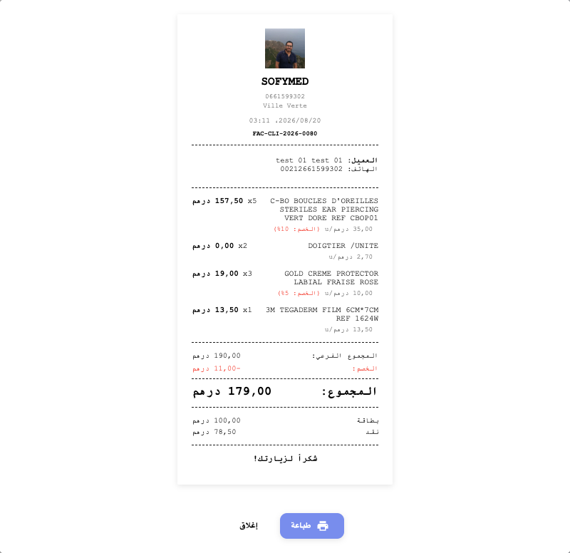
6.2 POS الشراء
POS الشراء (/purchase-pos أو قائمة POS المورد)
هو نفس الشاشة اللمسية للبيع، مع شارة شراء
وشريحة المورد. يسجّل استلامًا ويحدّث المخزون.

اختيار المورد
شريحة المورد ظاهرة دائمًا. ابحثوا عن المورد وحدّدوه: يظهر رصيده إن وُجد. لا ولاء ولا أسعار تجارية في الشراء.
مسح المنتجات المستلمة أو إضافتها
امسحوا كل مقال أو اختاروه من القائمة وأدخلوا الكمية المستلمة. زر للطلب (مقابل «متوفر» في البيع) مطفي افتراضيًا: فعّلوه لعرض النفاد وما دون الحد الأدنى فقط.
التحقق من أسعار الشراء
أكّدوا سعر شراء كل مقال أو عدّلوه. يُحفظ سجل الأسعار.
تأكيد الاستلام
المسوا تحصيل (أو ما يعادله تأكيد). يُحدَّث المخزون فورًا.
6.3 الخصومات والهامش والتحويل في POS
تكمّل الفقرات أدناه POS البيع وPOS الشراء عندما تحوّلون مستندًا قائمًا (عرض سعر، طلب، إذن تسليم / إذن استلام، إلخ) إلى مستند آخر من شاشة الصندوق، أو عندما تعدّلون الأسعار لحظة التحصيل.
خصم على سطر (POS البيع)
- لمس سطر في التذكرة يفتح لوحة الخصم (إن وُضع خصم) و/أو الإرجاع، ويخفي لوحات المنتجات الأخرى. لمس السطر المحدد مرة أخرى يلغي تحديده (وتُغلق اللوحات).
- إن كان دوركم يسمح بتعديل المنتجات (مسؤول، صيدلي، مدير)، يقدّم زر ⋯ أيضًا تعديل السعر: شاشة مخصّصة تحفظ سعر البيع في الكتالوج (وليس خصم السطر فقط). إذا كان المنتج عليه حظر تعديل السعر، يبقى الإدخال ظاهرًا لكنه مشطوب ورمادي.
- على التذكرة، المسوا ⋯ على السطر ثم خصم (أو وضع الخصم في اللوحة): نسبة، مبلغ أو سعر مفروض. إذا أُخفي الكتالوج (§15.9)، زر الخصم ظاهر على السطر. إذا كان المنتج عليه حظر الخصم، يبقى خصم السطر ظاهرًا لكنه مشطوب ورمادي؛ ويبقى خصم التذكرة الإجمالي ممكناً.
- وبالمثل، ⋯ → مرتجع (أو زر مرتجع على السطر عند إخفاء الكتالوج) يُدخل الكميات القابلة للبيع / التالفة / المنتهية. إذا كان المنتج عليه حظر الإرجاع، يبقى المرتجع ظاهرًا لكنه مشطوب ورمادي؛ وتبقى مرتجعات الشراء ممكنة.
- في وضع النسبة، تسمح النقطة في اللوحة بكسور المعدل (مثال 10.5٪). يُقرَّب المبلغ بالدرهم حسب خطوة القطع (14.50 − 10٪ = 13.05 → 13.10 إذا كانت الخطوة 0.10). ملخص المبيعات / تخفيضات الأسطر والنقد المقبوض والباقي يتبعان نفس الخطوة (§15.1).
- يظهر سعر الشراء (PPH) المرجعي إن كان مذكورًا: لا تنخفضوا كثيرًا.
- إذا انخفض سعر البيع الفعلي تحت PPH، تظهر شارة تحت PPH على السطر.

التحويل إلى مستند آخر (الكمية المصدر)
عندما يُفتح POS في وضع التحويل (مثل عرض سعر → طلب، طلب → فاتورة، إذن تسليم → فاتورة، أو ما يعادلها في جانب الشراء)، يعرض كل سطر آتٍ من المستند المصدر تحت محدّد الكمية عبارة «الكمية المصدر»: وهي الكمية على المستند الأصلي. يمكنكم تعديل الكمية على المستند الجديد مع الإبقاء على هذا المرجع ظاهرًا.
- POS البيع: تحويل طلب → فاتورة أو إذن تسليم؛ عرض الكمية المصدر لكل الأسطر المستوردة.
- POS الشراء: المبدأ نفسه عند تحميل مستند مورد في التحويل داخل POS الشراء.
طلب المطعم / المطبخ والفوترة (POS البيع)
إذا كنتم تستخدمون وحدة HoReCa: يمكن استعادة سطر طلب موسوم ملغى في المطبخ عند التحويل إلى فاتورة من POS. تشير شارة إلى هذا الوضع؛ وتُقترح الكمية المراد فوترتها بقيمة 0 (يمكنكم زيادتها إن لزم فوترة جزئية). تبقى الكمية المصدر على مستند الطلب ظاهرة كما سبق.
6.4 وضع الكشك (ملء الشاشة على الجهاز اللوحي)
يخفي وضع الكشك الشريط الجانبي وشريط الأدوات ليحوّل POS إلى تطبيق بملء الشاشة — مناسب للجهاز اللوحي في الصندوق أو الخدمة الذاتية.
التفعيل
قائمة الحساب (أيقونة 👤) → وضع الكشك. تنتقل الشاشة إلى ملء الشاشة ويختفي الشريط الجانبي.
الخروج
اضغطوا Échap أو مرّروا المؤشر فوق الزاوية العلوية المقابلة لإظهار زر الخروج من الكشك.
6.5 وضع دون اتصال
يكتشف السليم تلقائيًا انقطاع الاتصال بالإنترنت. عندما تكونون دون اتصال:
- يظهر شريط أحمر أعلى الشاشة.
- تستمر مبيعات POS بالعمل بشكل طبيعي وتُحفظ محليًا.
- يُعرض عدد المبيعات في انتظار المزامنة على الشريط.
- عند عودة الاتصال، يشير شريط برتقالي إلى المزامنة الجارية ثم يختفي تلقائيًا.
6.6 برنامج الولاء في POS
إذا كان برنامج الولاء مفعّلًا (التجاري → الولاء، §14.1)، تظهر ودجة تلقائيًا على التذكرة بمجرد اختيار عميل على فاتورة. هذا ليس مفتاحًا في خيارات شاشة الصندوق: بلا عميل لا يُعرض شيء.
- تعرض النقاط المتراكمة والمستوى (برونزي / فضي / ذهبي).
- تعرض التقدّم نحو المستوى التالي.
- تتيح إدخال عدد نقاط للاستخدام → يُطبَّق خصم مقابل تلقائيًا.
تُضاف النقاط تلقائيًا بعد كل بيع مؤكَّد.

6.7 مسح الرمز الشريطي وGS1 DataMatrix
ثلاث طرق لإضافة مقال بالرمز:
- مسدّس USB: يكتب في الصندوق كلوحة مفاتيح. رمز EAN (≥ 6 أرقام) ينتقل إلى السلة دون أن يعلق في البحث أو لوحة المبلغ المستلم.
- شريط البحث: لصق أو مسح EAN يضيف المنتج؛ الاسم (مثل ZIAJA) يصفّي الكتالوج.
- زر المسح: يظهر فقط على الهاتف / الجهاز اللوحي؛ يفتح الكاميرا ثم نفس البحث عن المنتج. غائب على صندوق المكتب (مسدّس USB).
يقبل الحقل رمز EAN تقليديًا و رمز DataMatrix GS1 (يُطبع غالبًا على الكراتين والمنتجات ذات الدفعات). يستخرج المسح تلقائيًا:
- GTIN (معرّف المنتج) للعثور على المقال؛
- رقم الدفعة إن وُجد في الرمز؛
- تاريخ انتهاء الاستهلاك إن وُجد.
تُقترح هذه المعلومات عند الإضافة إلى السلة (اختيار الدفعة / تاريخ الانتهاء). يستمر الرمز الشريطي البسيط (EAN-13) بالعمل كما كان.
6.8 شاشة العميل
على شاشة ثانية (جهاز لوحي مواجه للعميل، شاشة الصندوق)، افتحوا شاشة العميل
من شريط إجراءات POS. تعرض نافذة /pos/customer-display آنيا
السلة والكميات والمجموع المستحق والمرتجعات ونقاط الولاء.
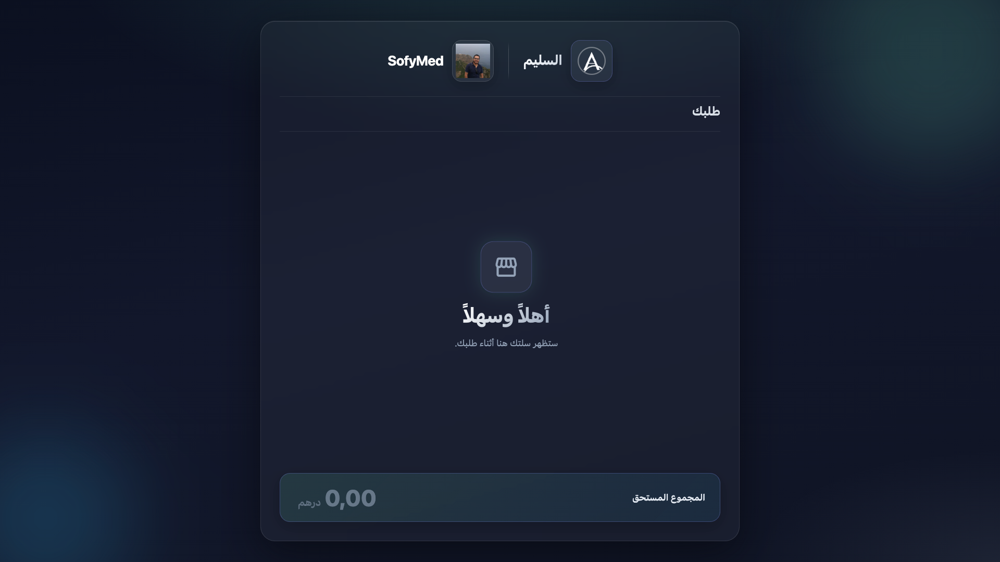
تتحدّث الشاشة وحدها ما دام POS مفتوحًا على الجهاز الرئيسي. يمكن تهيئة رسالة ترويجية ورمز QR (ولاء، تقييم، قائمة) في الإعدادات.
6.9 الكتالوج: فلتر المتوفر والمستخدَم
فوق بلاطات الكتالوج، بجانب البحث، يظهر زر متوفر فقط إذا كانت إدارة المخزون مفعّلة (خيار «تعطيل إدارة المخزون» غير مؤشَّر، §15.1). عند فتح صندوق البيع يكون الفلتر مفعّلًا مسبقًا.
- مفعّل (افتراضي البيع): تبقى البلاطات ذات مخزون قابل للبيع > 0 فقط (كل الفئات والبحث والمفضّلة).
- مطفي: يعود الكتالوج كاملًا بما فيه النفاد. يمكن عندها إضافة مقال بمخزون 0. التحصيل ممكن فقط إذا كان السماح بالمخزون السالب مفعّلًا (§15.1): يطلب الحوار تأكيدًا ثم يصير المخزون القابل للبيع تحت الصفر. وإلا يبقى تحصيل محظورًا.
- مسح رمز شريطي لمنتج بمخزون 0 يبقى ممكنًا: الفلتر يخص البلاطات فقط (وقائمة البحث إذا أُخفي الكتالوج، §15.9).
- في POS الشراء يظهر في المكان نفسه للطلب (نفاد وما دون الحد)، مطفي افتراضيًا.
بجانبه، في POS البيع فقط، يحدّ زر مستخدم 90 ي (مطفي افتراضيًا) البلاطات على المنتجات الظاهرة في فاتورة غير ملغاة خلال آخر 90 يومًا. يُجمع مع متوفر أو فئة أو البحث. بخلاف تبويب المنتجات السريعة (المفضّلة + آخر 12 مبيعًا)، يصفّح هذا الفلتر كل الكتالوج المعني. مسح منتج لم يُبع في الفترة يبقى ممكنًا.
6.10 العميل والرصيد والأسعار
على الصندوق اللمسي، شريحة العميل (بيع) أو المورد (شراء) دائمًا على التذكرة. الرصيد والولاء والأسعار التجارية لا تُضبط في الإعدادات → خيارات شاشة الصندوق (§15.9): تتبع السياق.
- بلا طرف: لا رصيد ولا ولاء.
- عميل (بيع): الرصيد والسقف إن وُجدا (سقف 0 = الائتمان غير مسموح)؛ الولاء إن كان البرنامج نشطًا (§6.6).
- مورد (شراء): الرصيد فقط. لا ولاء.
- الأسعار التجارية (سعر مشطوب، شارات القائمة / العرض): في البيع فقط، عندما يُطبَّق سعر فعلًا على السطر.
6.11 قفل الصندوق
هذا ليس وضع أمين الصندوق المقفل في قائمة الحساب (§2.10). تبقى الجلسة مفتوحة: رقم PIN للصندوق (مضبوط على المستخدم) يخفي التذكرة أثناء الاستراحة.
- شريط POS: زر قفل الصندوق (بجانب تحديث). على الشاشة الضيقة يكون الإجراء في قائمة ⋮ — لم يعد القفل في رأس التذكرة.
- يظهر جدار الوجوه (خلفية ضبابية): المسوا ملفّكم وأدخلوا PIN. النقر على الخلفية لا يغلقه.
- بدون حركة خلال مهلة الخمول (إعداد «قفل الصندوق بعد الخمول»، الافتراضي 90 ث، 0 = أبدًا) يظهر نفس الغطاء.
- إعادة تحميل الصفحة تبقي القفل حتى إدخال PIN. تسجيل الخروج يرفع القفل (لا جدار عند الدخول التالي إلا بإعداد مخالف).
بدون PIN صندوق لا يقفِل الزر. يختلف عن وضع الكشك (ملء شاشة بلا كلمة مرور، §6.4).
معاملات البيع
دورة البيع الكاملة: من عرض السعر إلى الفاتورة
يدير السليم دورة مستندية كاملة لمبيعاتكم. يمكن تحويل كل مستند إلى التالي بنقرة واحدة، دون إعادة إدخال.
يمكنكم البدء من أي مرحلة وفق عمليتكم الداخلية.
7.1 عروض أسعار البيع
عرض السعر مقترح تجاري يُرسل إلى العميل قبل أي طلب نهائي. لا يؤثر على المخزون.
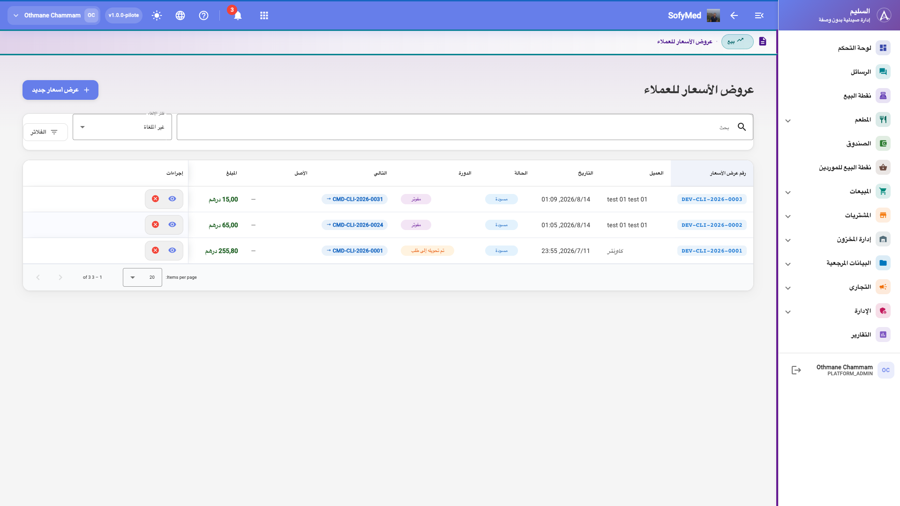
إنشاء عرض سعر
عرض سعر جديد
انقروا «+ عرض سعر جديد» في قائمة عروض الأسعار.
اختيار العميل
اختاروا العميل من القائمة أو أنشئوا عميلًا جديدًا.
إضافة الأسطر
أضيفوا كل منتج بكميته وسعره. طبّقوا خصومات عند الحاجة.
الحفظ والإرسال
احفظوا عرض السعر ثم اطبعوه أو أرسلوه بالبريد الإلكتروني إلى العميل.
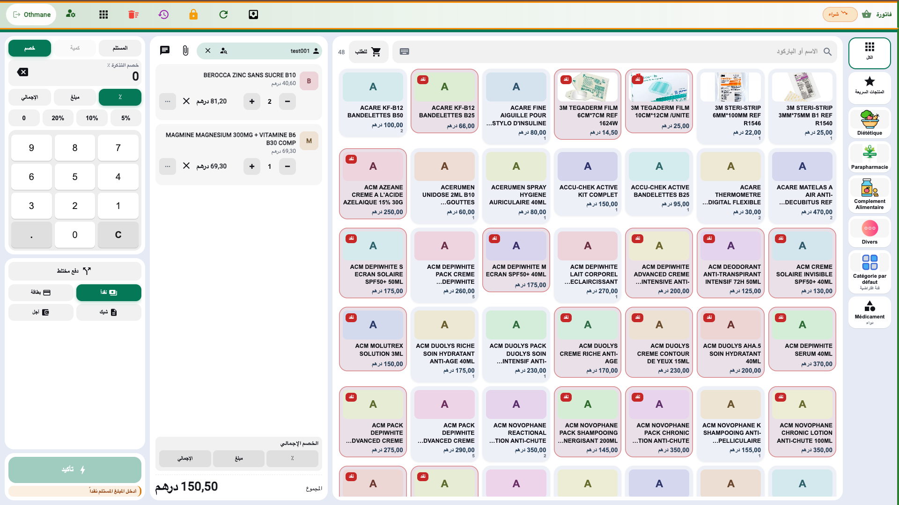
7.2 طلبات البيع
طلب البيع يؤكّد طلب العميل. يمكن إنشاؤه مباشرة أو تحويله من عرض سعر مقبول.
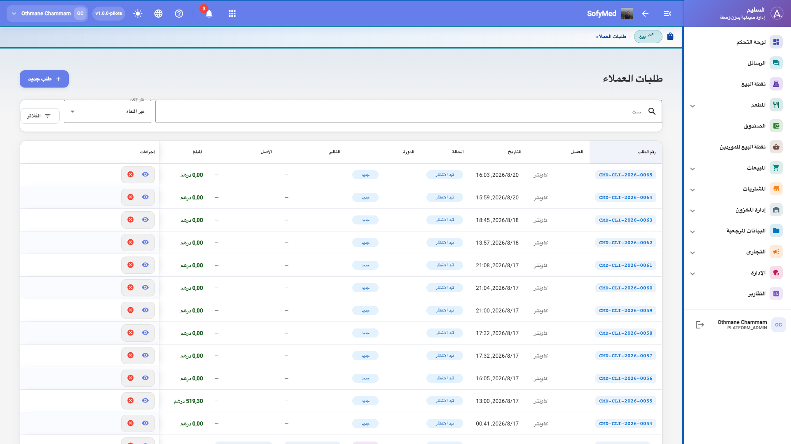
7.3 أذونات التسليم
يوثّق إذن التسليم (BL) الخروج الفعلي للبضائع من المخزون. يؤدّي اعتماده إلى إنقاص المخزون المقابل.
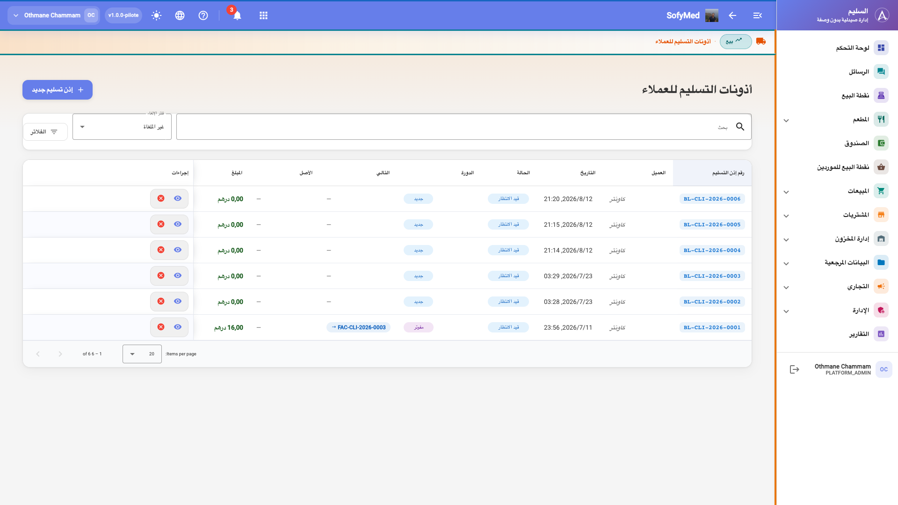
7.4 فواتير البيع
فاتورة البيع هي المستند المحاسبي الرسمي المسلَّم للعميل. يمكن توليدها من طلب أو إذن تسليم.
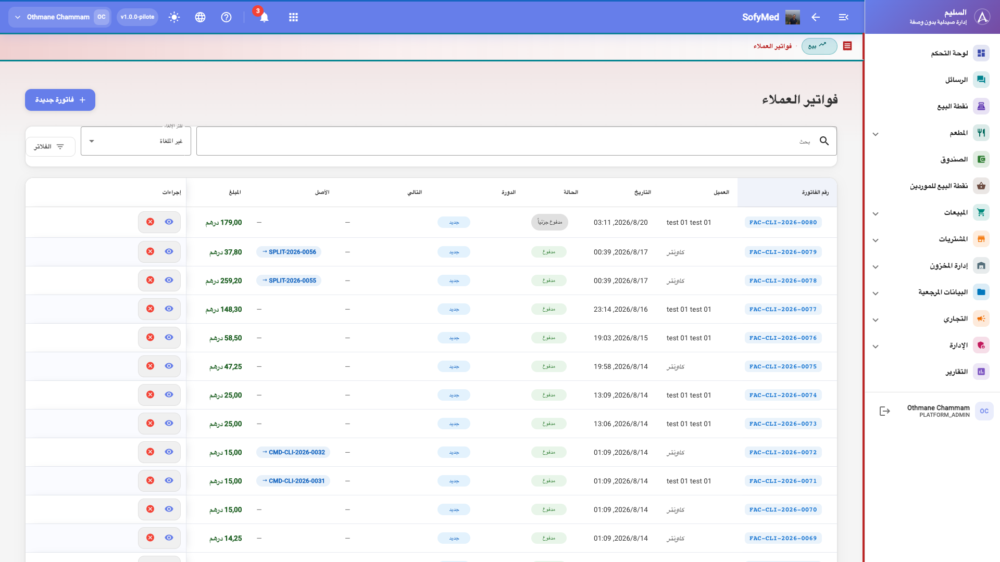
إجراءات على فاتورة
- طباعة: توليد PDF قابل للطباعة
- إرسال بالبريد الإلكتروني: إرسال الفاتورة إلى العميل
- تسجيل دفعة: إدخال تسديد جزئي أو كامل
- إرفاق ملف: إرفاق مستند (أمر شراء العميل، إلخ)
- إلغاء: إلغاء الفاتورة (مع تبرير)
7.5 دفعات العملاء
أديروا التسديدات المستلمة من عملائكم: دفعات على الفاتورة، سلف وعربون.
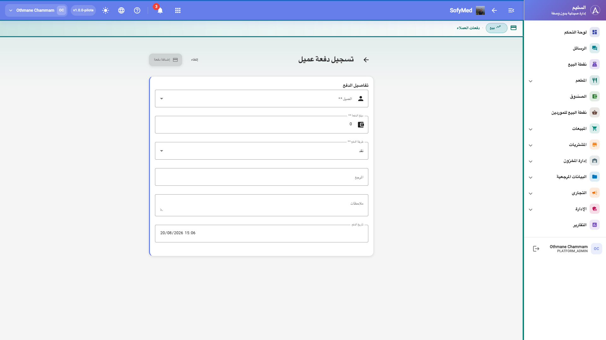
| طريقة الدفع | الوصف |
|---|---|
| نقد | تسديد نقدي، يؤثّر على الصندوق |
| بطاقة بنكية | دفع عبر جهاز TPE |
| شيك | شيك مقدَّم للتحصيل |
| تحويل بنكي | تحويل مستلم في الحساب |
| سلفة | عربون يُخصم من الفواتير اللاحقة |
قد يُضاف حق الطابع على الجزء المحصَّل لكل وسيلة، حسب النسب في §15.1 (مثل 0,25٪ على النقد في المغرب). يُقرَّب مبلغ الرسم حسب خطوة القطع (0.25 → 0.30 إذا كانت الخطوة 0.10). لا يدخل في رقم معاملات الفاتورة (مثل الإكرامية). يظهر على الدفعة والسلفة والإيصال وتقرير الإقفال للحصة النقدية.
7.6 المناقشات والمرفقات على المستند
على بطاقة عرض سعر أو طلب أو إذن تسليم أو فاتورة (وعلى شاشات مشابهة حسب صلاحياتكم)، تجدون كتلتين مفيدتين للعمل الجماعي:
- مناقشة مرتبطة بالمستند: سلسلة رسائل مخصّصة لهذه القطعة (مختلفة عن الرسائل العامة في الفصل 13). استخدموها لطلب اعتماد داخلي أو تنبيه اللوجستيك أو ترك ملاحظة يراها الزملاء الذين يفتحون الملف نفسه. باللمس: نفس الأهداف العريضة ولوحة المفاتيح كما في الرسائل.
- المرفقات: أضيفوا ملفات (PDF موقّع، أمر شراء عميل ممسوح، صورة، إلخ) للإبقاء على كل شيء مع المستند المحاسبي.
إذا لم تظهر هذه المناطق، فقد لا يملك ملفّكم الصلاحية المقابلة: اطلبوا من مسؤول.

7.7 مرتجعات البيع — إشعار دائن للعميل
عندما يعيد عميل بضائع، تنشئون إشعارًا دائنًا للعميل مباشرة من الفاتورة الأصلية.
فتح الفاتورة
انتقلوا إلى المبيعات → الفواتير وافتحوا الفاتورة المعنية.
إنشاء المرتجع
انقروا مرتجع (أيقونة). تُفتح نسخة من الفاتورة في وضع المرتجع.
تحديد الكميات المرتجعة
لكل سطر، أدخلوا الكميات المرتجعة وحالتها (قابل للبيع / تالف / منتهٍ). منتج عليه حظر الإرجاع لا يُضاف إلى تذكرة الإشعار الدائن.
التأكيد
يُنشأ الإشعار بالرقم AVOIR-CLI-XXXX. يُعاد إدماج المخزون ويتوفر PDF.
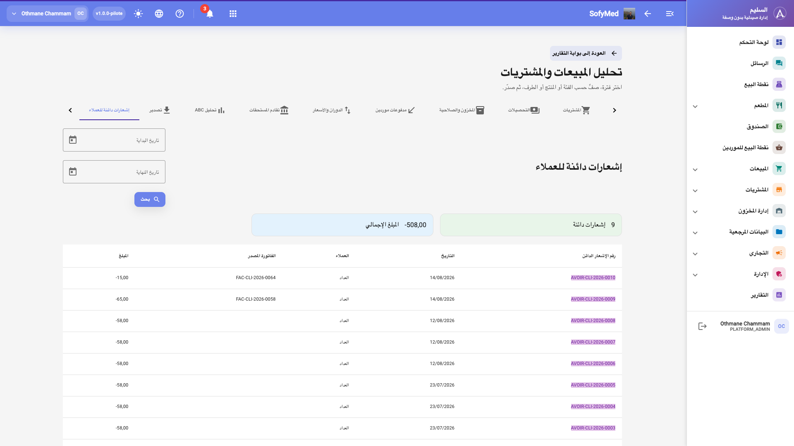
7.8 المشاركة عبر WhatsApp
على بطاقة فاتورة (ومستندات بيع أخرى)، يفتح زر WhatsApp محادثة مسبقة التعبئة (الاسم، رقم المستند، المبلغ) نحو هاتف العميل. المبدأ نفسه لـحجز (التاريخ، الأغطية، الطاولة) ومقترح شراء (أسطر + المجموع نحو المورد).
معاملات الشراء
من المقترح التلقائي إلى دفع المورد، مرورًا بعروض الأسعار والطلبات
تغطي وحدة الشراء التوريد: مقترحات تلقائية، وعروض أسعار مورد محتملة، وطلبات، واستلامات، وفواتير ومدفوعات.
ليست كل المراحل إلزامية: يمكنكم إدخال طلب أو فاتورة مباشرة حسب عادتكم.
8.1 مقترحات الشراء
تُولَّد مقترحات الشراء تلقائيًا من النظام عبر تحليل مستويات المخزون والعتبات الدنيا المحدّدة. تشكّل مساعدة على القرار لمسؤول المشتريات لديكم.
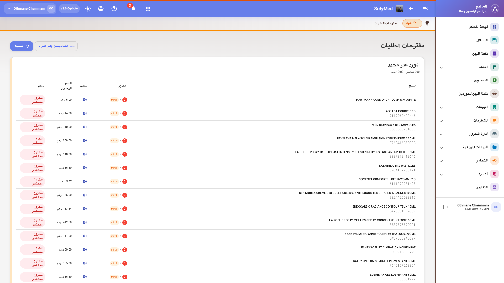
8.2 عرض سعر المورد
عرض سعر المورد طلب أسعار أو مقترح شراء موجّه إلى المورد قبل الالتزام بطلب نهائي. يقترب من عرض سعر البيع في جانب العميل، لكن هنا أنتم من تطلبون من المورد.
افتحوا قائمة عروض أسعار الموردين في قائمة المشتريات، أنشئوا عرض سعر جديدًا، اختاروا المورد والأسطر (منتجات، كميات، أسعار متفاوض عليها). يمكنكم بعد ذلك إرساله أو تحويله إلى طلب شراء عندما يقبل المورد.
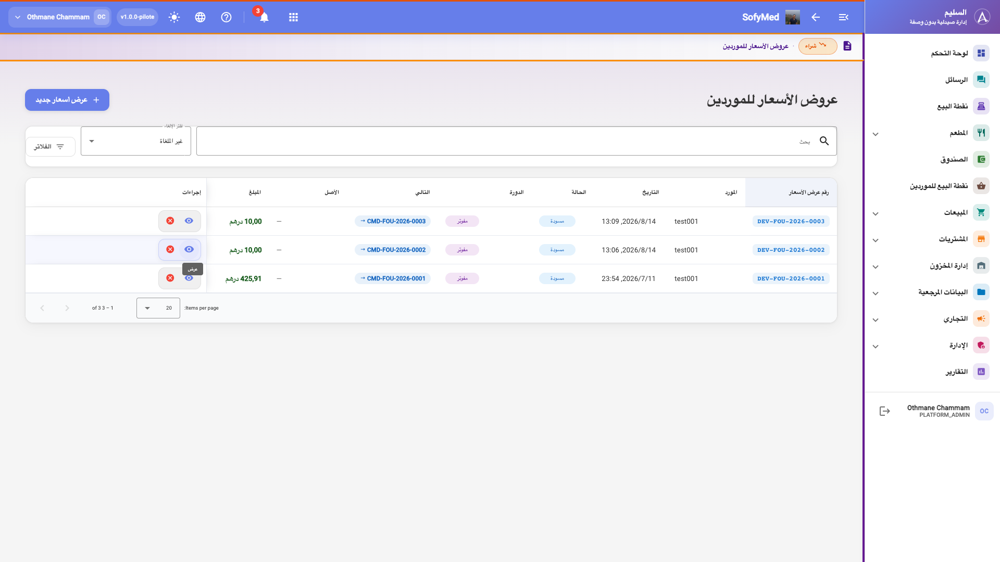
8.3 طلبات الشراء
أنشئوا طلب شراء (أمر شراء) لتوجيهه إلى مورد. يمكن توليده من مقترح أو إنشاؤه يدويًا.
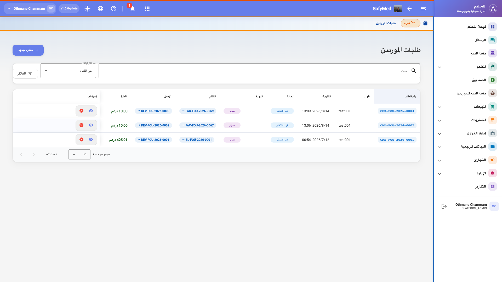
8.4 أذونات الاستلام
عند استلام البضائع، أنشئوا إذن استلام. تحدّث هذه المرحلة المخزون وتسجّل الكميات المستلمة فعليًا (وقد تختلف عمّا طُلب).
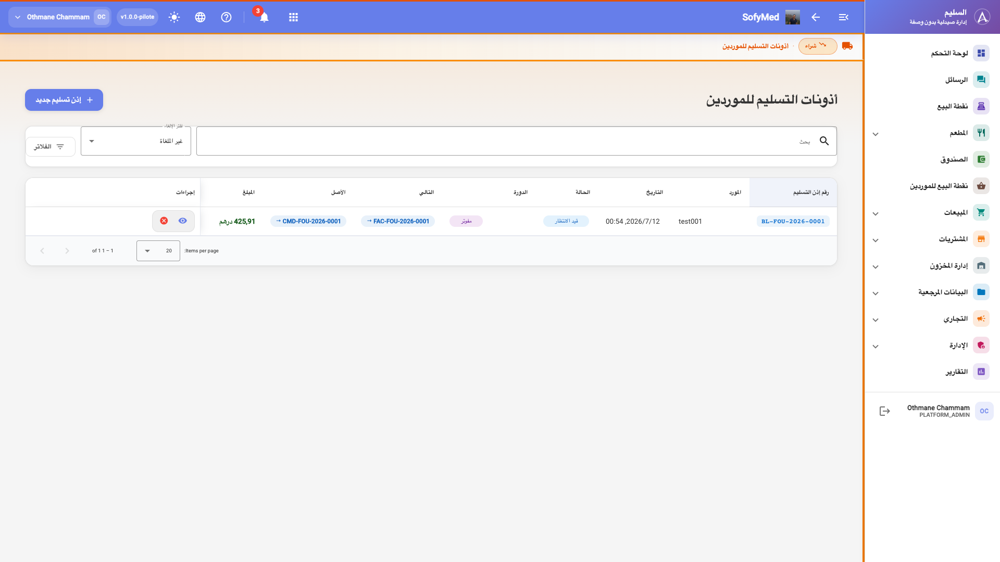
8.5 فواتير الموردين
سجّلوا الفواتير المستلمة من مورديكم لمتابعة محاسبية دقيقة لالتزاماتكم ودين المورد.
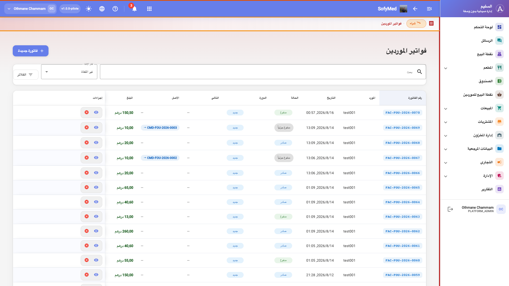
سجل أسعار الشراء
يحفظ السليم سجل أسعار الشراء لكل منتج. يمكنكم استشارة تطوّر أسعار الموردين ورصد التغيّرات.
8.6 دفعات الموردين
سجّلوا التسديدات المنفّذة لمورديكم وتابعوا دين المورد آنيا.
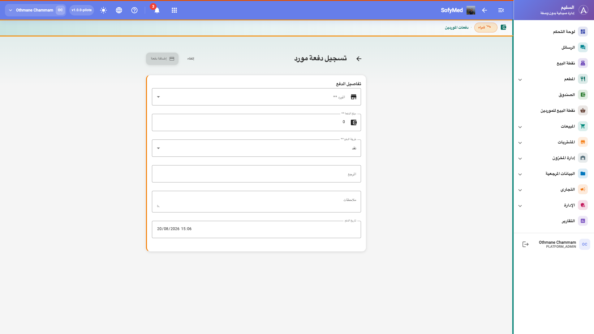
المخزون والجرد
متابعة آنية لمستويات مخزونكم
9.1 حالة المخزون
تمنحكم صفحة المخزون نظرة فورية على الكميات المتاحة لكل منتج، مع رمز لوني للتنبيه.
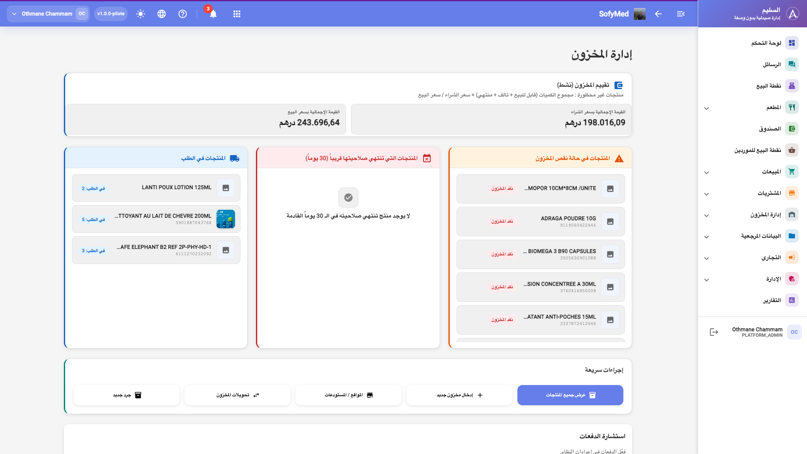
مؤشرات المخزون
| اللون | المعنى |
|---|---|
| ● عادي | مخزون كافٍ، فوق العتبة الدنيا |
| ● منخفض | مخزون قريب من العتبة الدنيا — يجب إعادة التموين |
| ● نفاد | مخزون صفر أو دون الحد الحرج |
حركات المخزون
تُتتبَّع كل دخول أو خروج مخزون مع التاريخ والسبب (بيع، شراء، تسوية، جرد) والمستند المصدر المرتبط.

9.2 الجرد
تتيح لكم وحدة الجرد إجراء عدّ فعلي و مطابقة الكميات النظرية مع الكميات الحقيقية.
إنشاء جرد
انقروا «+ جرد جديد» واختاروا إن كان الجرد كاملًا أو جزئيًا (حسب الفئة).
إدخال الكميات الفعلية
لكل منتج، أدخلوا الكمية المعدودة فعليًا. يمكنكم أيضًا استيراد البيانات عبر ملف CSV.
التحقق من الفروقات
يعرض التطبيق الفروقات بين المخزون النظري والمخزون المعدود.
الاعتماد والتسوية
أكّدوا إنهاء الجرد. يُحدَّث المخزون تلقائيًا بالفروقات المسجّلة.
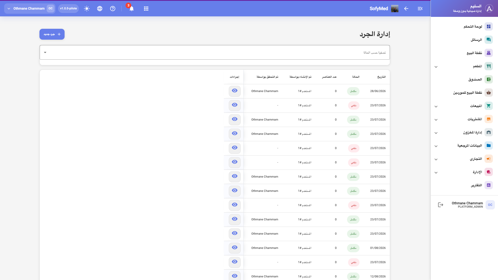
9.3 تنبيهات المخزون والشراء
يمكن الوصول إلى التنبيهات من أيقونة الجرس (الإشعارات) في شريط الأدوات، للمستخدمين المصرّح لهم. يشير شارة إلى عدد العناصر غير المقروءة. انقروا سطرًا لفتح الشاشة المعنية (مخزون، شراء، إلخ).
في أسفل اللوحة، تتيح اختصارات الانتقال مباشرة إلى صفحة المخزون أو إلى معاملات الشراء.
- تنبيه نفاد / مخزون منخفض: منتج دون العتبة الدنيا (يمكن تجميع التنبيهات المتشابهة)
- تنبيه انتهاء الصلاحية: منتج يقترب من تاريخ انتهاء صلاحيته أو تجاوزه
- تنبيهات مهنية أخرى: حسب التهيئة، قد تظهر أيضًا تنبيهات مرتبطة بالمشتريات
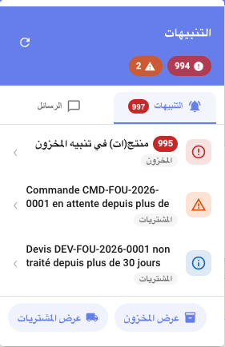
9.4 إدارة المنتهية صلاحيتها
تسرد صفحة المخزون → المنتهية (/stock/expiry) كل الدفعات التي
يقترب تاريخ انتهاء استهلاكها أو تجاوزه.
رموز الألوان
- 🔴 أحمر — دفعة منتهية أصلًا
- 🟠 برتقالي — تنتهي خلال الأيام السبعة القادمة (حرج)
- 🟢 أخضر — تنتهي ضمن المهلة المصفاة لكنها غير حرجة
التصفية
استخدموا محدّد «عرض الدفعات التي تنتهي خلال X يومًا» لضبط نطاق التحليل (7، 30، 60، 90 يومًا).
إتلاف دفعة
النقر على إتلاف
على سطر الدفعة المعنية.
إدخال الكمية
أدخلوا الكمية المراد إخراجها من المخزون القابل للبيع (إتلاف كلي أو جزئي).
التأكيد
يُخفَّض المخزون القابل للبيع وتُسجَّل الحركة.
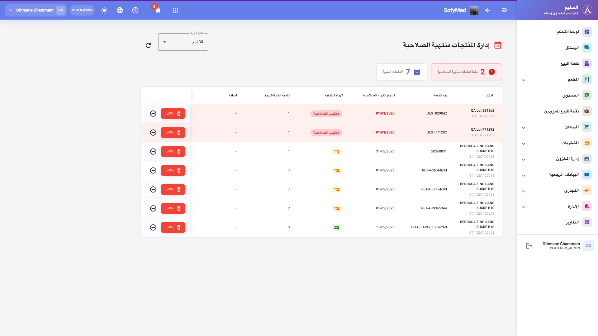
9.5 المواقع / المستودعات
تسرد المخزون → المواقع / المستودعات (/stock/sites) أماكن التخزين.
الموقع الموسوم POS (الافتراضي) هو المستخدم في الصندوق والمبيعات.
لا تستقبل المواقع الأخرى (مستودع، احتياطي، متجر ثانٍ) مخزونًا إلا عبر تحويل.
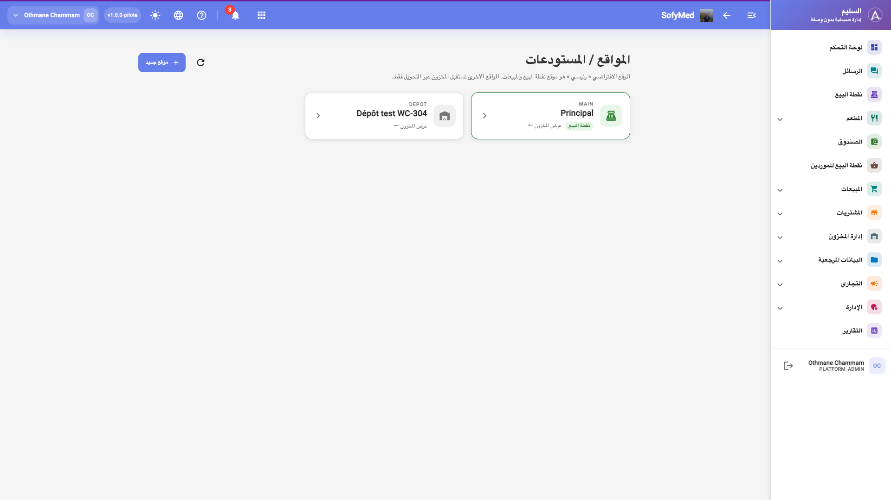
إنشاء موقع
انقروا موقع جديد، أدخلوا رمزًا (مثل DEPOT) واسمًا.
استشارة مخزون موقع
افتحوا بطاقة الموقع لرؤية الكميات القابلة للبيع والتالفة والمنتهية.
تغيير موقع POS
على موقع ليس الافتراضي، تعيين كـ POS: ستخصم المبيعات التالية من هذا المخزون.
9.6 تحويلات المخزون
تنقل المخزون → التحويلات (/stock/transfers) كميات من موقع إلى آخر.
يشمل الدورة الكاملة الشحن (خروج من موقع المصدر)، العبور إن وُجد،
والاستلام في الوجهة. تُسجَّل فروق الكميات عند الاستلام؛
قد يتطلب التحويل فوق العتبة المُعدّة موافقة المدير.
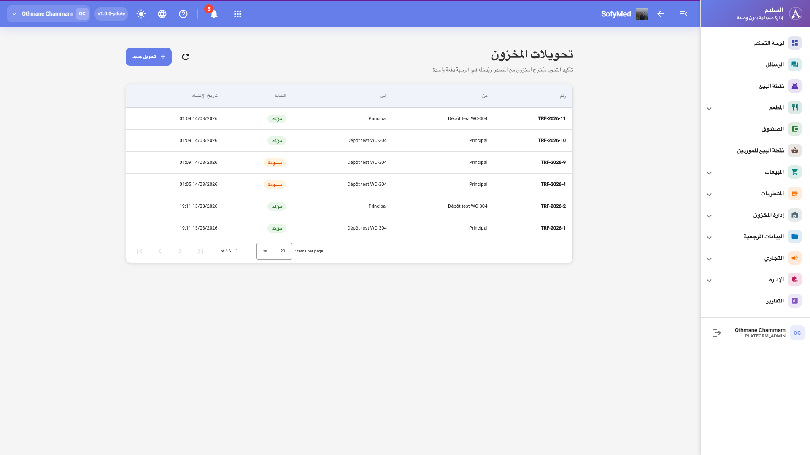
تحويل جديد
اختاروا موقع المصدر وموقع الوجهة، ثم أضيفوا المنتجات والكميات.
التأكيد
أشّروا تأكيد الآن لتنفيذ الحركة فورًا، أو احفظوا ثم أكّدوا لاحقًا من البطاقة.
9.7 شبكة التجزئة
إصدار Retail، ملف Standard أو Advanced: قائمة
شبكة التجزئة تجمع لوحات التحكم متعددة المواقع (/retail-network/*).
الصلاحية المطلوبة: stock:read (مخفية في Essential أو الملف البسيط).
| الشاشة | المسار | الاستخدام |
|---|---|---|
| لوحة الشبكة | /retail-network/network | مؤشرات قابل للبيع / محجوز / متاح لكل موقع |
| العتبات والتشكيلات | /retail-network/site-catalog | حد أدنى/أقصى، أيام التغطية، تشكيلة نشطة |
| إعادة التزويد | /retail-network/replenishment | اقتراحات حسب الموقع؛ أوامر مورد مجمّعة |
| مركز المرتجعات | /retail-network/returns | سياسات الإرجاع؛ إشعارات دائن ومرتجعات مورد |
| الموافقات | /retail-network/approvals | طلبات الموافقة المعلّقة |
| الجرد الدوري | /retail-network/cyclic-inventory | خطط حسب الموقع/المنطقة |
| التكلفة المتوسطة / الهدر | /retail-network/shrinkage | CMP لكل موقع؛ تسجيل الهدر |
| حجوزات المخزون | /retail-network/reservations | حجوزات نشطة؛ تحرير أو إنهاء |
في بطاقة المنتج، لوحة الشبكة تربط عدة موردين وتحويلات وحدات. في أمر الشراء، لوحة المتابعة تعرض الاستلام الجزئي والمطابقة ثلاثية الأطراف. الولاء (الإعدادات + بطاقة العميل) يتضمن انتهاء النقاط وسجل الحركات.
الصندوق
إدارة جلسات الصندوق وحركات النقد
تتيح لكم وحدة الصندوق إدارة الأموال النقدية في تجارتكم مع تتبّع كامل.
فتح جلسة صندوق
الوصول إلى الصندوق
افتحوا الصندوق من Hub (بلاطة مخصّصة) أو من القائمة الجانبية.
التصريح برصيد الافتتاح
أدخلوا المبلغ النقدي الموجود في الصندوق لحظة الفتح.
فتح الجلسة
انقروا «فتح الصندوق». تبدأ الجلسة ويصبح POS جاهزًا للعمل.

حركات الصندوق
أثناء الجلسة، سجّلوا الحركات غير المرتبطة بالمبيعات:
- دخول نقد: إضافة فكة، استرداد مستلم…
- خروج نقد: سحب لمصاريف جارية، دفع مورد نقدًا…
اللوحة الرقمية مدمجة: أدخلوا المبلغ مباشرة، دون زر إضافي. اختاروا طريقة الدفع (نقد، بطاقة، شيك، تحويل، أخرى): النقد فقط يغيّر الصندوق النظري. الإدخال أو الإخراج يتطلب فئة (إضافة صرف، مستلزمات، نقل…). الإخراج يتطلب أيضاً سبباً. تُدار الفئات في §10.5.

إغلاق الجلسة وتقرير الإقفال
عدّ النقد
في نهاية اليوم، عدّوا محتوى صندوقكم فعليًا.
إدخال الرصيد الفعلي
المسوا المبلغ المحسوب، أدخلوا على اللوحة الرقمية (ظاهرة دائماً)، ثم أكّدوا نفس المبلغ. لا حاجة لزر «لوحة الأرقام».
إغلاق الجلسة
انقروا «إغلاق الصندوق». يُولَّد تقرير إقفال تلقائيًا.

سجل الجلسات
انتقلوا إلى تبويب «السجل» لاستشارة كل الجلسات السابقة، وتقارير إقفالها والحركات المرتبطة.
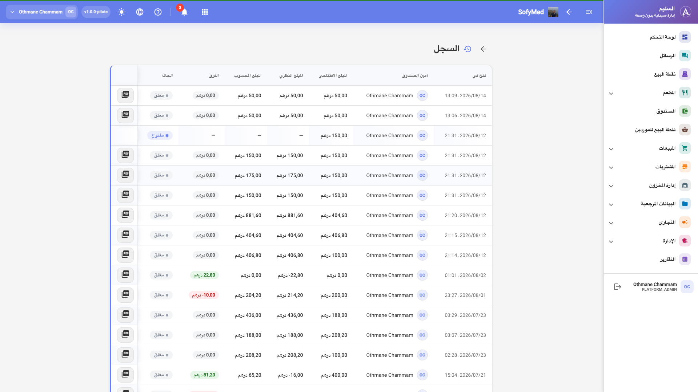
10.5 فئات الصندوق
الوصول: الإدارة ← فئات الصندوق. يجب تصنيف كل إدخال أو إخراج نقد (إضافة صرف، مستلزمات، نقل، راتب، متنوع…). الكتالوج خاص بالمؤسسة: أنشئوا أو عدّلوا أو عطّلوا فئة دون تغيير بقية التطبيق.
- الرمز: معرّف فريد (مثل
SUPPLIES). - التسمية بالفرنسية، وتسمية عربية اختيارية.
- الاتجاه: إدخال، إخراج، أو كلاهما.
- الفئة المعطّلة تختفي من قائمة الحوار، لكنها تبقى على السجل المسجّل سابقاً.
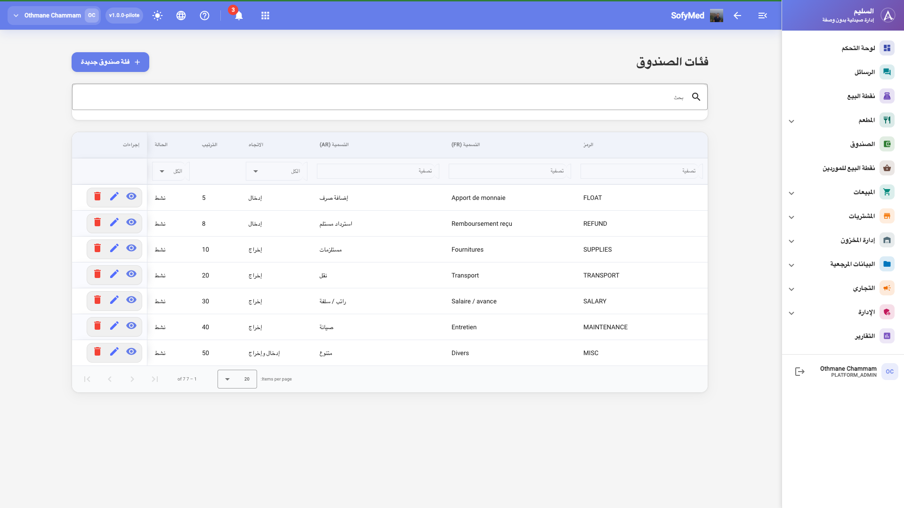
انقروا سطراً أو + جديد لفتح البطاقة: الرمز، التسميات، الاتجاه، الترتيب والحالة النشطة.
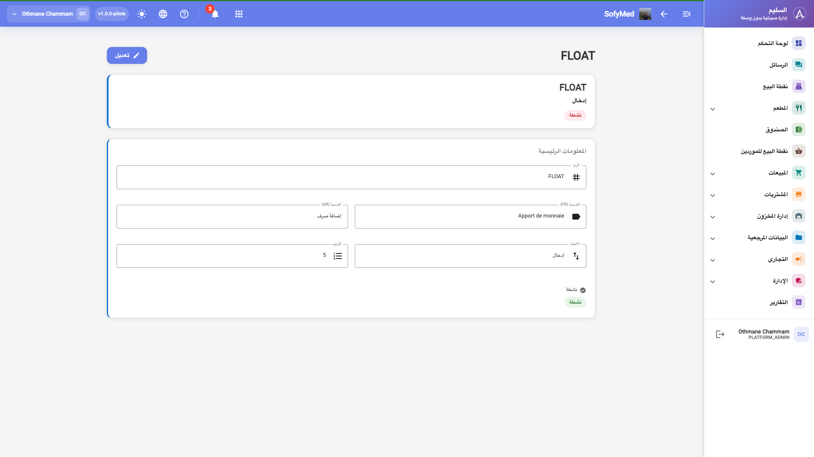
التقارير والتحليلات
استثمروا بياناتكم لقيادة نشاطكم
يمنحكم قسم التقارير نظرة تحليلية على كامل نشاطكم التجاري مع صادرات بصيغ مختلفة.
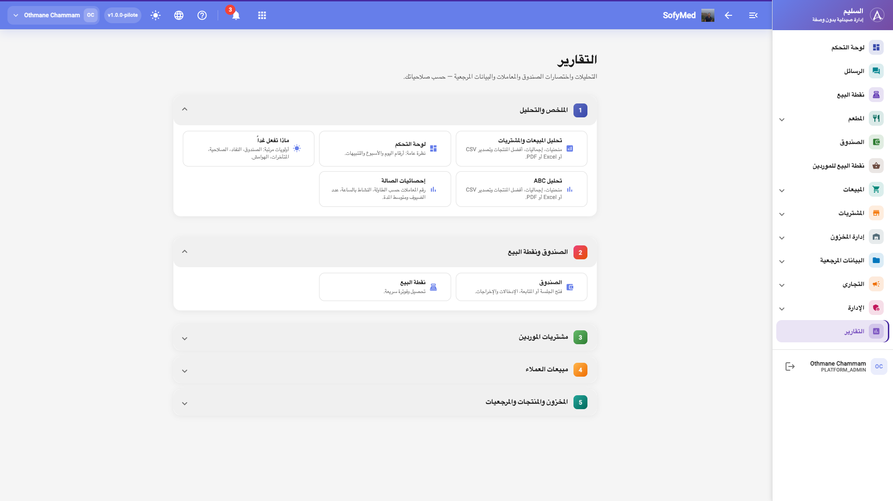
تُنظَّم الصفحة الأولى التقارير في أقسام قابلة للطي: وصول سريع إلى الرسوم البيانية (التحليلات) ولوحة التحكم، وروابط نحو الصندوق وPOS البيع، واختصارات المشتريات (تحليلات المشتريات، دوران المخزون، الصادرات، POS الشراء، فواتير وطلبات المورد) واختصارات المبيعات (فواتير، طلبات، أذونات تسليم، عروض أسعار). افتحوا القسم الذي يهمّكم ثم الزر المقابل.
11.0 صفحة التقارير: نظرة عامة
يسرد الجدول التالي أكثر التقارير شيوعًا المتاحة من قوائم هذه المنطقة وروابطها (قد تختلف التسميات الدقيقة على الشاشة قليلًا حسب الإصدار).
| التقرير | الوصف | التصدير |
|---|---|---|
| المبيعات حسب الفترة | رقم المعاملات والكميات المباعة حسب اليوم / الأسبوع / الشهر | CSV، Excel، PDF |
| المبيعات حسب المنتج | ترتيب المقالات حسب حجم البيع | CSV، Excel |
| المبيعات حسب العميل | رقم المعاملات المحقَّق لكل عميل والرصيد الجاري | CSV، Excel |
| الهامش الإجمالي | الهامش حسب المنتج والإجمالي على الفترة | CSV، Excel، PDF |
| المشتريات حسب المورد | حجم الشراء والدين حسب المورد | CSV، Excel |
| حالة المخزون | قيمة المخزون والمنتجات النافدة | CSV، Excel، PDF |
| الصندوق | ملخص جلسات الصندوق | |
| التحليلات | رسوم تفاعلية للتطوّر | — |
| مستحقات العملاء / الائتمان | الأرصدة المستحقة حسب العميل، سقوف الائتمان، المتبقي المتاح، العملاء المتجاوزون؛ خيار تضمين الأرصدة الصفرية | CSV |
11.1 تقرير مستحقات العملاء (الائتمان)
في صفحة التقارير، يتيح القسم المخصّص لـمستحقات العملاء تحميل حالة للذمم: مجموع المستحقات، عدد العملاء المعنيين، و جدول مفصّل (الاسم، الهاتف، الرصيد، حد الائتمان، الائتمان المتاح، مؤشر التجاوز). أشّروا الخيار لتضمين العملاء ذوي الرصيد الصفري إن أردتم نظرة شاملة. يتيح زر تصدير البيانات بصيغة CSV.
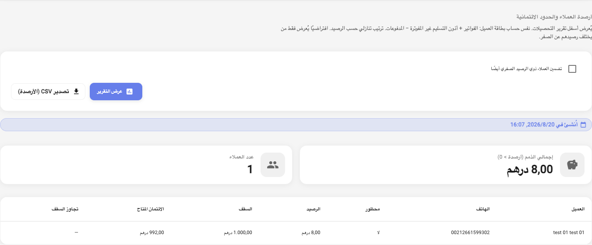
11.2 تصفية تقرير وتصديره
اختيار التقرير
انقروا فئة التقرير المطلوبة في القائمة.
تحديد الفترة
استخدموا محدّد التاريخ لتعيين النطاق الزمني.
تطبيق تصفية
ضيّقوا حسب الفئة أو المنتج أو العميل أو المورد وفق التقرير.
التصدير
انقروا زر التصدير المطلوب (CSV أو Excel أو PDF).
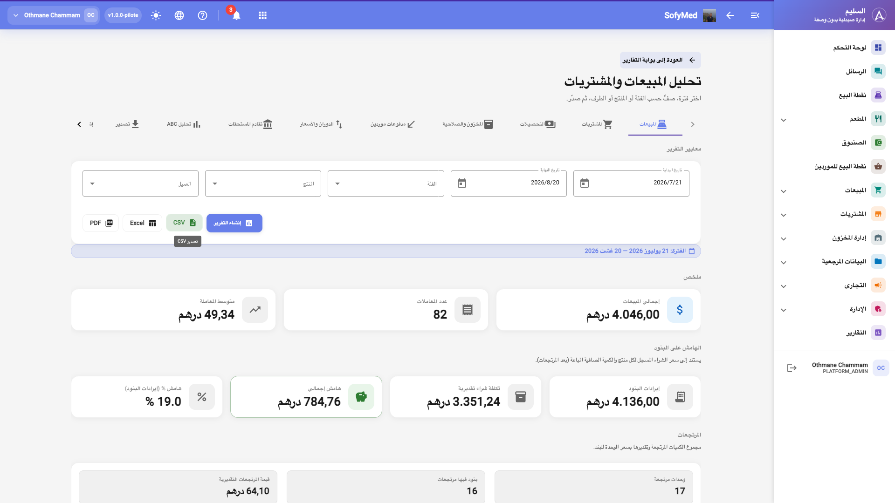
11.3 تقادم المستحقات (Aging 30/60/90 يومًا)
يمنحكم تبويب تقادم المستحقات نظرة على كل فواتيركم غير المسدّدة، مصنّفة حسب القِدم. يساعدكم ذلك على ترتيب أولوية المتابعات مع العملاء.
| العمود | المعنى |
|---|---|
| غير مستحق | فواتير لم يبلغ تاريخ استحقاقها بعد |
| 0–30 يومًا | تأخير أقل من شهر |
| 31–60 يومًا | تأخير من شهر إلى شهرين |
| 61–90 يومًا | تأخير من شهرين إلى ثلاثة أشهر |
| > 90 يومًا | تأخير أكثر من ثلاثة أشهر — للمتابعة أولًا |
انقروا تصدير PDF أو طباعة لنسخة ورقية جاهزة للإرسال.
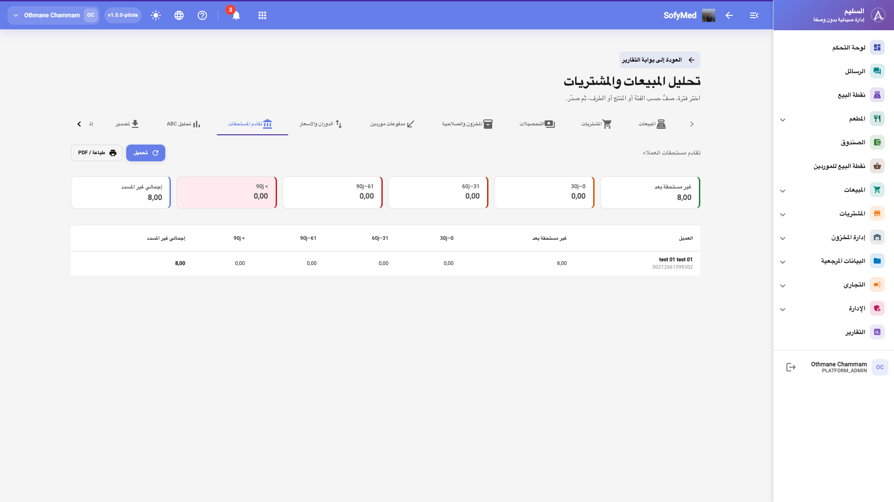
11.4 تحليل ABC للمنتجات
يصنّف تحليل ABC منتجاتكم في ثلاث فئات حسب مساهمتها في رقم المعاملات:
- 🅰 الفئة A — أعلى 70 % من رقم المعاملات: منتجاتكم الرائدة. أولوية المخزون والتفاوض مع المورد.
- 🅱 الفئة B — الـ 20 % التالية: منتجات مهمة يجب مراقبتها.
- 🅲 الفئة C — الـ 10 % المتبقية: منتجات هامشية، يمكن ترشيدها عند الاقتضاء.
اختاروا فترة تحليل (شهر، ربع، سنة) وانقروا تحليل.
تعرض بطاقات الملخص عدد المنتجات ورقم معاملاتها حسب الفئة. يظهر الجدول المفصّل الرتبة ونسبة رقم المعاملات والتراكم.
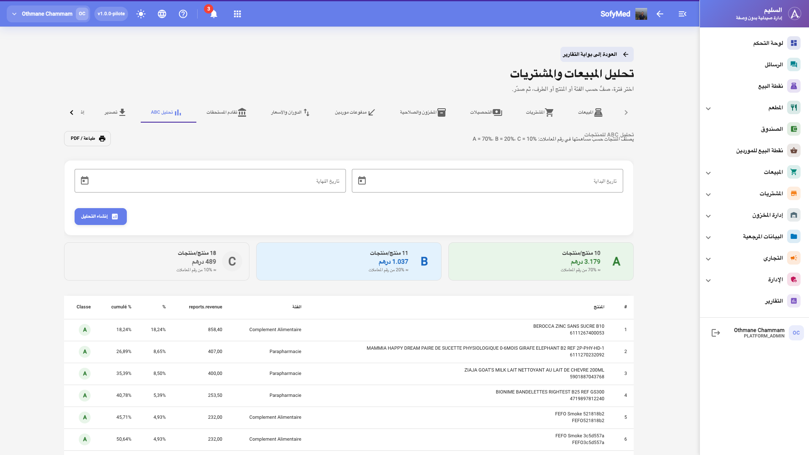
11.5 الإشعارات الدائنة للعملاء (تقرير)
يسرد تبويب إشعارات العملاء كل الإشعارات الصادرة في فترة معيّنة (رقم AVOIR-CLI-XXXX). يعرض العميل والمبلغ والفاتورة الأصلية والتاريخ.
- صفّوا حسب الفترة بمحدّدات التاريخ.
- يُعرض مجموع الإشعارات أسفل الجدول.
- صدّروا بصيغة CSV لمحاسبتكم.
11.6 صادرات المحاسبة DGI
يتيح تبويب صادرات المحاسبة (DGI) توليد الملفات التنظيمية للمديرية العامة للضرائب في المغرب.
| التصدير | المحتوى |
|---|---|
| يومية القيود | كل القيود المحاسبية (مبيعات، مشتريات، تحصيلات، مدفوعات) على الفترة |
| دفتر الأستاذ | ملخص حسب الحساب المحاسبي (3421، 4411، 7111، إلخ) مع الأرصدة |
| تصريح TVA | القاعدة الخاضعة وTVA المحصّلة/القابلة للخصم حسب النسبة |
اختيار الفترة
اختاروا تاريخي البداية والنهاية.
النقر على زر التنزيل
يُنزَّل ملف CSV تلقائيًا.
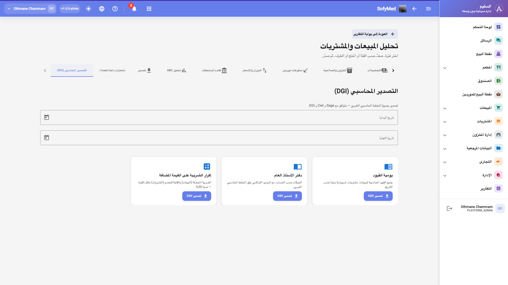
HoReCa — المطاعم
إدارة الطاولات وطلبات القاعة وشاشة المطبخ (KDS) والإحصائيات واستدعاء النادل
/horeca/salle (مخطط القاعة) و/horeca/cuisine
(شاشة المطبخ KDS). يعيد الجذر /horeca التوجيه تلقائيًا إلى مخطط القاعة.
12.1 مخطط القاعة
يقدّم شاشة مخطط القاعة عرضًا رسوميًا لمطعمكم. كل طاولة موضوعة على الخريطة وتعرض حالتها آنيا. يشير الجرس أعلى الجهة المقابلة إلى استدعاءات النادل قيد الانتظار؛ ويمكن لكل طاولة عرض رمز QR قابل للطباعة. زر عرض الكل يُظهر كل الطاولات والجدران في الشاشة. يظهر الحجز المؤكد كشارة وقت على الطاولة (مثل 20h · 4 ش.). في الإعداد، يكون وضع إعادة الترتيب مفعّلاً مباشرة (سحب، مقابض، ديكور). يبقى رمز QR لاستدعاء النادل على مخطط الاستغلال. يمكن تدوير طاولة أو ديكور (45°)، وتغيير حجم الطاولات والديكور بالمقابض أثناء إعادة الترتيب، وإضافة مناطق (تراس، بار…) وديكور (نبتة، كاونتر، مقعد، باب)، والتنقل عبر الخريطة المصغّرة.

حالات الطاولات
| الحالة | الوصف |
|---|---|
| حرة | طاولة متاحة، جاهزة لاستقبال زبائن |
| مشغولة | زبائن جالسون، طلب قيد التنفيذ |
| محجوزة | طاولة محجوزة لساعة محدّدة |
| قيد الانتظار | طُلب أُرسل إلى المطبخ، قيد التحضير |
12.2 إدارة الطاولات
انقروا طاولة في مخطط القاعة للوصول إلى قائمة طلبها.
فتح الطاولة
انقروا طاولة حرة لبدء طلب جديد.
إضافة المقالات
المسوا طبقًا أو امسحوا رمزه. إن كانت له إضافات، تُفتح ورقة خيارات: علّموا الإضافات وأدخلوا ملاحظة المطبخ (بدون بصل، ناضج جيدًا…) في الشاشة نفسها — لم تعد هناك أيقونة ملاحظات منفصلة. قبل الإرسال إلى المطبخ، ⋯ على السطر ثم خيارات تعيد فتح هذه الورقة لتعديل الإضافات أو سحبها. بعد إضافة، يعود المؤشر إلى البحث للمسح التالي.
نفس الطبق مرتين مع ملاحظات مختلفة = سطران (لكل ملاحظة، تذكرتان في KDS). نفس الطبق ونفس الإضافات ونفس الملاحظة = سطر واحد بكمية أعلى.
الإرسال إلى المطبخ
انقروا «إرسال إلى المطبخ». تظهر المقالات فورًا على شاشة KDS.
التحصيل
بعد انتهاء الوجبة، انقروا «تحصيل» للانتقال إلى وضع POS وتسديد الفاتورة.

أنماط الخدمة
- في المكان (Dine-in): خدمة في القاعة مع طاولة مرتبطة
- للأخذ (Takeaway): طلب دون طاولة
- توصيل (Delivery): طلب مع عنوان توصيل
نقل طاولة
لنقل زبون من طاولة إلى أخرى (تحرير طاولة، إعادة تنظيم…)، استخدموا وظيفة «نقل الطاولة» من قائمة طاولة المصدر.
12.3 شاشة المطبخ (KDS)
KDS (Kitchen Display System) هي الشاشة المخصّصة للمطبخ. تعرض آنيا كل الطلبات المرسلة من الطاولات.
استخدام KDS
- تعرض كل تذكرة الطاولة والمقالات والإضافات وملاحظة المطبخ، إضافة إلى ساعة الإرسال
- يؤشّر الطبّاخ كل مقال تباعًا مع تقدّم التحضير
- عندما تصبح كل المقالات جاهزة، تُوسَم التذكرة «جاهز»
- يُرسل إشارة إلى النادل للخدمة
12.4 الحجوزات
أديروا حجوزات زبائنكم مباشرة من السليم.
إنشاء حجز
النقر على «حجز جديد»
من صفحة الحجوزات أو من طاولة في مخطط القاعة.
تعبئة المعلومات
اسم الزبون، التاريخ والساعة، عدد الأغطية، الطاولة المطلوبة (اختياري) وملاحظات خاصة.
التأكيد
احفظوا الحجز. تظهر شارة وقت (مثل 20h · 4 ش.) على الطاولة في مخطط القاعة.
12.5 إحصائيات القاعة
الوصول: قائمة إحصائيات القاعة (/horeca/stats) أو عبر Hub التقارير.
- مؤشرات KPI: رقم المعاملات الإجمالي، الجلسات، متوسط الأغطية، المدة المتوسطة، معدل الدوران.
- خريطة حرارية زمنية: مدرج لرقم المعاملات حسب الشريحة الساعية (ساعات الذروة).
- أداء حسب الطاولة: ترتيب حسب رقم المعاملات والجلسات ومدة الإشغال.
- رقم المعاملات حسب النادل: ترتيب المستخدمين حسب رقم المعاملات المحقَّق.
- الفترة: 7 أيام، 30 يومًا، 90 يومًا أو تواريخ مخصّصة.
- تصدير PDF: زر «تصدير PDF» → طباعة عبر المتصفح.
12.6 تقسيم الفاتورة (split bill)
من جلسة الطاولة، يتيح زر «تقسيم الفاتورة» توزيع المقالات على حصتين (مثل مجموعتين من الضيوف).
فتح الحوار
انقروا «تقسيم الفاتورة» من أسفل صفحة الجلسة.
توزيع الكميات
لكل مقال، حدّدوا كم يذهب إلى الفاتورة 1 والفاتورة 2. استخدموا «توزيع بالتساوي» للتقسيم بنقرة.
تحصيل كل حصة
عند التأكيد، يُنشأ طلب فرعي لكل حصة ويُفتح POS لتحصيل الأولى.
12.7 طلب الكاونتر (أخذ / توصيل)
للطلبات دون طاولة معيّنة، استخدموا زر «الكاونتر» على مخطط القاعة.
اختاروا أخذ أو توصيل — تُفتح الصفحة /horeca/comptoir
بالواجهة نفسها لجلسة الطاولة (بحث منتجات، إرسال إلى المطبخ، تحصيل).
12.8 استدعاء النادل (QR)
لكل طاولة رمز QR فريد يتيح للزبائن استدعاء نادل من هاتفهم، دون حساب ولا تطبيق.
/call/{token} متاح دون تسجيل دخول. يمسح الزبون QR ويرى اسم طاولته
ويضغط «استدعاء النادل». يمكن أن ترافق الاستدعاء رسالة اختيارية.
التهيئة (العاملون)
عرض رمز QR
على مخطط القاعة، انقروا أيقونة QR الخاصة بالطاولة (ظاهرة دائمًا، بما في ذلك على الشاشات اللمسية).
الطباعة أو النسخ
اطبعوا QR (زر «طباعة») لتغليفه على الطاولة، أو انسخوا الرابط.
معالجة الاستدعاءات
يعرض جرس مخطط القاعة الاستدعاءات قيد الانتظار. أكّدوا استلامها من اللوحة الجانبية.
/call/{token} — يستدعي الزبون نادلًا دون تسجيل دخول.12.9 التوصيل هاتفًا / Glovo / Uber
تتابع لوحة HoReCa → التوصيل (/horeca/livraisons) الطلبات
المراد توصيلها. لا توجد واجهة شريك API: يعيد العاملون نسخ تذكرة Glovo / Uber
(رقم المنصّة، الزبون، العنوان) أو يدخلون طلبًا هاتفيًا.
إنشاء توصيل
توصيل جديد
من اللوحة، أو من مخطط القاعة → الكاونتر → توصيل.
القناة
هاتف (رقم الزبون مطلوب)، Glovo / Uber Eats (رقم طلب المنصّة مطلوب)، أو أخرى.
أخذ الطلب
بعد التسجيل يُفتح الكاونتر لإضافة المقالات. لا يتم الإرسال إلى المطبخ إلا إذا ذهب سطر واحد على الأقل إلى المطبخ؛ عندئذ تنتقل التذكرة إلى قيد التحضير.
تقديم الحالة
على البطاقة: مستلم → قيد التحضير → جاهز → في الطريق → تم التوصيل. يُقترح WhatsApp إذا كانت القناة هاتفًا ووُجد رقم.
الرسائل الداخلية
تواصلوا مع زملائكم مباشرة من السليم
تتيح وحدة الرسائل الداخلية لمستخدمي مؤسستكم
التواصل فيما بينهم دون مغادرة التطبيق. افتحوا صفحة الرسائل
من القائمة الجانبية أو بلاطة في Hub (العنوان /messages).

وظائف الرسائل
- المحادثات: ابدأوا نقاشًا ثنائيًا أو مجموعة من قائمة الرسائل
- الرسائل: أرسلوا نصوصًا مع مرفقات
- البحث: اعثروا بسرعة على محادثة أو رسالة
- الإشعارات: تلقّوا تنبيهات آنية للرسائل الجديدة
- الفتح: بالنقر على محادثة ينزل الخيط إلى آخر رسالة (فوق حقل الإدخال)
- لمسي: القوائم والفقاعات والإدخال تُلمس بالإصبع. في الوضع اللمسي أو عند نقطة البيع يظهر لوحة المفاتيح على الشاشة تحت حقل الإدخال دون زر إضافي
بدء محادثة
فتح الرسائل
انقروا أيقونة الرسائل في القائمة أو انتقلوا إلى الرسائل.
محادثة جديدة
انقروا «محادثة جديدة»، أشّروا زميلًا لتبادل ثنائي، أو عدة أشخاص (شخصين آخرين على الأقل) لمجموعة. يمكنكم إعطاء اسم للمجموعة (اختياري).
إرسال رسالة
المسوا منطقة الإدخال (أو لوحة المفاتيح اللمسية إن ظهرت)، ثم زر الإرسال. إجراءات التعديل/الحذف ظاهرة للإصبع دون تمرير المؤشر.

13.3 فتح محادثة
من القائمة، انقروا محادثة: يُفتح الخيط في الأسفل على آخر رسالة (نص أو صوت أو صورة). لا حاجة للتمرير يدويًا. إذا حُمّلت صورة بعد ذلك يبقى الخيط ملصقًا بالأسفل ما لم تصعدوا لقراءة السجل. «تحميل الأقدم» يحافظ على موضعكم في الخيط.
التجاري
الولاء والعروض وقوائم الأسعار
تجمع القائمة الجانبية التجاري القواعد التجارية للمؤسسة: الولاء والعروض وقوائم الأسعار. وهي منفصلة عن قائمة الإدارة (المستخدمون، المؤسسة، فئات الصندوق، النسخ الاحتياطي…).
14.1 الولاء
هيّئوا البرنامج من التجاري → الولاء. يُوصف الاستخدام في الصندوق (ودجة النقاط، الاسترداد) في القسم 6.6.
| المعلمة | الوصف |
|---|---|
| تفعيل البرنامج | يفعّل أو يعطّل ودجة الولاء في POS |
| نقاط لكل MAD مُنفَق | عدد النقاط المضافة مقابل 1 MAD من البيع |
| قيمة النقطة (بـ MAD) | التحويل عند الاسترداد (مثال: 1 نقطة = 0.1 MAD) |
| الحد الأقصى لنسبة الخصم لكل استرداد | يسقّف خصم الولاء (مثال: 20% كحد أقصى من الفاتورة) |
| عتبة برونزي / فضي / ذهبي | النقاط اللازمة لبلوغ كل مستوى |
انقروا حفظ لتطبيق التعديلات. تسري التغييرات فورًا في POS.
14.2 العروض
الوصول: التجاري → العروض. أنشئوا حملات محدودة زمنيًا (٪، مبلغ، سعر مشطوب أو عرض 2+1). في POS يُشطب سعر الكتالوج وتظهر شارة العرض.
| النوع | الأثر في POS |
|---|---|
| خصم ٪ | نسبة على السعر الوحدوي |
| مبلغ | خصم بـ MAD على السعر الوحدوي |
| سعر مشطوب | سعر مفروض (ملصق «سعر مشطوب») |
| 2+1 / X+Y | حزمة: اشترِ X واحصل على Y مجانًا |
- استهدفوا منتجات و/أو فئات. بلا هدف = الكتالوج كله.
- إذا انطبقت عدة عروض، يُحتفظ بواحد فقط (الأولوية الأعلى).
- تراكم الأسعار في POS: الكتالوج → قائمة أسعار العميل → عرض واحد → ٪ مستوى الولاء، ثم استرداد النقاط.
انقروا سطرًا أو أيقونة العين لفتح البطاقة: النوع، القيمة، التواريخ، الأولوية، الفئات والمنتجات المستهدفة، ثم تعديل أو حذف.
14.3 قوائم الأسعار
الوصول: التجاري → قوائم الأسعار. تعرّف قائمة أسعارًا حسب المنتج (وربما عتبة كمية دنيا). تُسند إلى العميل من بطاقته (قائمة منسدلة)، وليس من POS.
إنشاء القائمة
سمّوها، أضيفوا أسطرًا (منتج، كمية دنيا، سعر).
إسنادها إلى العميل
افتحوا بطاقة العميل واختاروا القائمة في الحقل المخصّص.
البيع في POS
بمجرد اختيار هذا العميل، يُطبَّق سعر القائمة (قبل العرض والولاء).
تفتح أيقونة العين التفصيل: الاسم، الحالة النشطة، والأسطر (منتج، كمية دنيا، سعر وحدوي).
الإعدادات
تهيئة التطبيق والمستخدمين والترخيص ونسخ قاعدة البيانات احتياطيًا
15.1 الإعدادات العامة
هيّئوا معلومات مؤسستكم ومظهر المستندات و الإعدادات العامة للتطبيق.

| المعلمة | الوصف |
|---|---|
| اسم الشركة | الاسم الذي يظهر على فواتيركم وإيصالاتكم |
| الشعار | الشعار المطبوع على المستندات |
| العنوان | العنوان الكامل للمؤسسة |
| الهاتف / البريد الإلكتروني | بيانات الاتصال المعروضة على المستندات |
| العملة | العملة المستخدمة (مثل: MAD، EUR، USD) |
| خطوة المبالغ | تقريب HALF_UP لكل المبالغ (الأسطر، ملخص المبيعات / المرتجعات / تخفيضات الأسطر، التذكرة، رسم الطابع، الإكرامية، النقد، الباقي). الافتراضي 0.10 للدرهم. نسبة التخفيض لا تُقرَّب حسب الخطوة. سعر الكتالوج لا يُعاد كتابته (14.50 مشطوب، المجموع 13.10؛ طابع 0.25٪ على 100 → 0.30). |
| TVA الافتراضية | نسبة TVA المطبّقة افتراضيًا على المنتجات |
| تذييل الإيصال | رسالة مخصّصة على إيصالات الصندوق |
| مهلة المسح | وقت الانتظار بعد مسح الرمز الشريطي (مللي ثانية) |
| تعطيل إدارة المخزون | إذا فُعّل: لا متابعة للمخزون عند البيع (الصندوق، BL، الفواتير) وتُخفى وحدتا المخزون / الجرد؛ إذا عُطّل: السلوك المعتاد |
| السماح بالمخزون السالب | إذا فُعّل (إدارة المخزون مفعّلة): يمكن للبيع أو إيصال التسليم أن يجعل المخزون القابل للبيع تحت الصفر بعد تأكيد في الصندوق. معطّل افتراضيًا. بلا أثر إذا عُطّلت إدارة المخزون. انظروا §6.9. |
| قفل الصندوق بعد الخمول | المهلة بالثواني قبل جدار الوجوه في POS (الافتراضي 90، 0 = أبدًا، الحد 3600). انظروا §6.11. |
| حق الطابع حسب الوسيلة | نسبة٪ على الجزء المحصَّل (خارج الطابع). الافتراضي 0. خارج رقم المعاملات، مثل الإكرامية. انظروا §7.5. |
| الإكراميات | إذا فُعّل: سطر إكرامية (مبلغ بالدرهم) أسفل كتلة الدفع في POS (تحت الوسائل أو المختلط). خارج مجموع الفاتورة؛ يُدرج في التحصيل (نقدًا أو بطاقة). يُحفظ المبلغ والوضع على الفاتورة وفي المسودة. معطّل افتراضيًا. |
| السعر على الملصقات | يعرض سعر البيع على ملصقات الرف (A4 أو رول). انظروا §4.1. |
15.2 إدارة المستخدمين
أنشئوا وأديروا حسابات كل المستخدمين الذين يصلون إلى السليم في مؤسستكم.
إنشاء مستخدم
النقر على «+ مستخدم جديد»
من قسم الإعدادات → المستخدمون.
تعبئة المعلومات
الاسم الأول، اللقب، عنوان البريد الإلكتروني (سيُستخدم معرّفًا لتسجيل الدخول) وكلمة المرور الأولية.
منح دور
اختاروا الدور المناسب: مسؤول، مدير، صيدلي، أمين صندوق أو مطبخ.
الحفظ
يمكن للمستخدم الآن تسجيل الدخول ببياناته.
15.3 الأدوار والصلاحيات
نظام صلاحيات السليم دقيق جدًا. يمكنكم تحديد بدقة ما يمكن لدور فعله وما لا يمكنه.
الصلاحيات المتاحة
| المورد | الإجراءات |
|---|---|
| لوحة التحكم | قراءة |
| POS البيع | قراءة / كتابة |
| POS الشراء | قراءة / كتابة |
| المبيعات (عروض أسعار، طلبات، BL، فواتير) | قراءة / إنشاء / تعديل / حذف |
| دفعات العملاء | قراءة / كتابة |
| المشتريات (كل المراحل) | قراءة / إنشاء / تعديل |
| دفعات الموردين | قراءة / كتابة |
| المخزون | قراءة / كتابة |
| الجرد | قراءة / كتابة |
| المنتجات / الفئات | قراءة / كتابة |
| العملاء / الموردون | قراءة / كتابة |
| الصندوق | قراءة / كتابة |
| التقارير | قراءة |
| المستخدمون | قراءة / إنشاء / تعديل |
| الإعدادات | قراءة / كتابة |
| المطبخ (KDS) | قراءة / كتابة |
صلاحيات فردية (تجاوزات)
إضافة إلى الأدوار، يمكنكم منح صلاحية معيّنة لمستخدم فردي أو سحبها منه، دون تعديل دوره العام. انتقلوا إلى بطاقة المستخدم → تبويب «الصلاحيات».
15.4 إدارة الترخيص
يتيح لكم قسم الترخيص استشارة حالة ترخيص السليم و تفعيله أو تجديده.
تفعيل ترخيص
الحصول على مفتاح الترخيص
يزوّدكم موزّعكم بمفتاح تفعيل فريد.
الانتقال إلى الإعدادات → الترخيص
افتحوا قسم إدارة الترخيص.
إدخال المفتاح
الصقوا مفتاحكم في الحقل المخصّص وانقروا «تفعيل».
التأكيد
تؤكّد رسالة نجاح التفعيل. يُحدَّث تاريخ الانتهاء.
15.5 سجل الاتصالات
يسجّل سجل الاتصالات كل دخول إلى التطبيق: المستخدم، التاريخ، الساعة، عنوان IP والجهاز المستخدم. يتيح ذلك رصد اتصالات مشبوهة.
15.6 المصادقة الثنائية (MFA)
تضيف MFA (Multi-Factor Authentication) طبقة أمان إلى حسابكم. إضافة إلى كلمة مروركم، سيُطلب رمز من 6 أرقام تولّده تطبيق مثل Google Authenticator أو Authy عند كل تسجيل دخول.
تفعيل MFA
فتح إعدادات MFA
انتقلوا إلى الإعدادات → الأمان (MFA).
مسح رمز QR
افتحوا Google Authenticator على هاتفكم → + → مسح رمز QR → وجّهوا الكاميرا نحو الرمز المعروض.
إدخال رمز التحقق
أدخلوا الرمز ذا الستة أرقام المعروض في التطبيق → انقروا تحقق وتفعيل.
تعطيل MFA
في الصفحة نفسها، انقروا تعطيل، وأدخلوا رمز TOTP الحالي للتأكيد.
15.7 المعرّفات الضريبية DGI
أدخلوا معرّفاتكم الضريبية في الإعدادات → المؤسسة، قسم «المعرّفات الضريبية DGI المغرب». تظهر هذه المعلومات تلقائيًا على كل ملفات PDF لديكم (فواتير، إشعارات، أذونات تسليم).
| الحقل | الوصف |
|---|---|
| ICE | المعرّف المشترك للمؤسسة (15 رقمًا) |
| IF | المعرّف الضريبي (رقم الضريبة) |
| RC | السجل التجاري |
| البراءة | رقم البراءة |
| رأس المال | رأس المال بـ MAD (يُعرض على الفواتير) |
15.8 نسخ احتياطي لقاعدة البيانات
الوصول: الإعدادات → نسخ احتياطي لقاعدة البيانات (/settings/backup).
محصور بـالمسؤولين.
تنزيل نسخة احتياطية
فتح صفحة النسخ الاحتياطي
من الإعدادات، انقروا الرابط الأحمر «نسخ احتياطي لقاعدة البيانات».
التنزيل
انقروا «تنزيل النسخة الاحتياطية». يُولَّد ملف .sql ويُنزَّل.
الحفظ في مكان آمن
احفظوا الملف على وسيط خارجي أو سحابة مشفّرة.
الاستعادة من نسخة احتياطية
اختيار الملف
اختاروا ملف .sql لنسخة احتياطية صدّرتموها سابقًا.
التأكيد
اكتبوا بالضبط RESTAURER في حقل التأكيد.
إعادة تشغيل الخادم
بعد الاستعادة، أعيدوا تشغيل الخلفية لضمان اتساق البيانات.
pg_dump وpsql
في PATH النظام (أو مهيأتين عبر pg.tools.path).
15.9 خيارات شاشة الصندوق
الوصول: الإعدادات → خيارات شاشة الصندوق. المفتاح يمكنه فقط إخفاء كتلة يوفّرها الملف الشخصي أصلًا (متجر، كاونتر، صيدلية، مطعم): الخصومات والمرتجعات والإكرامية والبحث والمرفقات والمحادثة وغيرها.
- ظاهرة دائمًا (بلا مفتاح): شريحة العميل / المورد.
- حسب السياق (بلا مفتاح): الرصيد والسقف، الولاء، الأسعار التجارية — انظروا §6.10.
- «إظهار الكل» يعيد الكتل التي أخفيتموها يدويًا.
- الكتالوج (التصنيفات والبلاطات): عند إخفائه لا يظهر الرواق؛ يبقى المسح والبحث (قائمة مؤقتة). تتّسع التذكرة (§6.1).
تنطبق الخيارات نفسها على POS البيع وPOS الشراء. الولاء والأسعار التجارية يبقيان للبيع فقط.
تطبيق المدير على الجوال
قيادة النشاط من هاتف (PWA أو APK أندرويد)
تطبيق المدير عرض منسّق للمدير أثناء التنقّل: رقم اليوم، حالة الصندوق، تنبيهات المخزون / تاريخ الانتهاء، اختصارات. لا يتضمّن POS كاملًا (افتحوا POS من تبويب المزيد عند الحاجة).
16.1 PWA على العنوان /m
بعد تسجيل الدخول، افتحوا /m أو المسوا شريط «فتح تطبيق المدير» على Hub.
ثلاثة تبويبات في الأسفل: الرئيسية (رقم المعاملات، الصندوق، مؤشرات KPI)، التنبيهات (خطة العمل نفسها للوحة التحكم)،
المزيد (POS، Hub، المخزون، التقارير، الإعدادات، تسجيل الخروج).
- السحب للتحديث: اسحبوا نحو الأسفل للتحديث. يتم تحديث تلقائي كل 45 ثانية إذا كان التبويب ظاهرًا.
- دون اتصال: شريط + بيانات قد تكون في الذاكرة المؤقتة (حداثة نحو 10 دقائق).
- التثبيت: آيفون → مشاركة → على الشاشة الرئيسية. أندرويد Chrome → أولًا إلغاء قفل تخطيط الشاشة الرئيسية، ثم القائمة → إضافة إلى الشاشة الرئيسية. عبر HTTP على عنوان IP محلي (مثل
192.168.x.x)، ينشئ Chrome اختصارًا وليس تطبيق «متاجر».
16.2 تطبيق أندرويد (APK)
يفتح APK Capacitor (com.assalim.app) العرض نفسه /m بملء الشاشة، مع أيقونة Assalim.
في وضع تجريبي / شبكة محلية، يحمّل التطبيق عنوان الخادم (Mac أو PC الذي يشغّل السليم): يجب أن يكون الهاتف والخادم
على شبكة Wi‑Fi نفسها. متجر Play ليس بعد قناة التوزيع.
السليم الأساسي (حانوت)
بقالة الحي: واجهة بسيطة، دين الزبون، مخزون موقع واحد
السليم الأساسي يطابق الثلاثي GROCERY + ملف التجربة بسيط
+ إصدار أساسي. تعرض القائمة أربع بلاطات: بيع، الدفتر،
المخزون، اليوم. عروض الأسعار والطلبات وHoReCa ووحدات ERP المتقدمة مخفية
(البيانات تبقى في القاعدة عند العودة إلى Retail).
17.1 الملف البسيط والواجهة
- إعداد موجّه: المحل، صندوق
CAISSE1، استيراد CSV اختياري، أول بيع. - الخطوة 2 تسأل عن الماسح والبيع بالوزن (تفضيلات تُحفظ للمحل).
- POS بيع: فاتورة مباشرة، نقد أو دين زبون، ماسح USB دون إعداد.
- شراء: استلام مباشر من المورد (مدفوع / باقي).
- الصندوق: فتح، حركات، إغلاق موجّه (عد قبل المبلغ النظري).
- دون اتصال معتمد: فواتير بيع/شراء مباشرة في قائمة الانتظار؛ الجرد والإغلاق والمدفوعات اللاحقة محظورة مع رسالة.
17.2 الدفتر والكشف
قائمة الزبائن تصبح الدفتر: أرصدة، فرز، تحصيل سريع دون فاتورة جديدة، سجل قابل للتدقيق (الأسطر الملغاة محفوظة).
- تحصيل: الدفتر → زبون → مبلغ → وسيلة → إيصال.
- مشاركة الكشف: قائمة مع واتساب (نص FR/AR عبر
wa.me)، تصدير PDF (طباعة «حفظ بصيغة PDF») أو صورة PNG للتنزيل. - لا إرسال تلقائي: أنتم تضغطون إرسال في واتساب.
17.3 الترقية إلى Retail
إعدادات المؤسسة: التبديل إلى إصدار Retail وملف قياسي. تظهر قائمة تحقق (نسخ احتياطي، تشخيص، وحدات، موقع ثانٍ، جرد، تدريب). العودة إلى الأساسي يخفي دون حذف.
17.4 مقاييس التجربة والعتاد
في اليوم، يرى المدير جدول مسارات التجربة (30 يومًا): الإعداد، أول بيع، بيع نقدي بالماسح، إغلاق الصندوق، تحصيل الدفتر، مشاركة الكشف وإعادة التشغيل دون اتصال — مع الوسيط وأهداف SLA.
إعدادات الصندوق تعرض الطابعات المعتمدة 80 مم USB (Xprinter XP-N160I، Epson TM-T20III) مع التوصيل والاختبارات. تحققوا من العربية RTL على تذكرة حقيقية قبل الإطلاق.
المسرد — مصطلحات شائعة
تعريفات قصيرة لتجدوا طريقكم في الدليل وعلى الشاشة
| المصطلح | المعنى المبسّط |
|---|---|
| BL (إذن التسليم) | مستند يثبت أن البضائع غادرت نحو العميل؛ يخفض المخزون عند اعتماده. |
| Hub | الصفحة الرئيسية ببلاطات ملوّنة لفتح الوحدات (المبيعات، المشتريات، إلخ). |
| POS | «Point of sale»: شاشة الصندوق للبيع أو، في POS الشراء، لتسجيل استلام مورد. |
| عرض السعر | مقترح أسعار؛ يصبح طلبًا أو فاتورة بعد القبول (في جانب البيع أو الشراء). |
| الطلب | التزام بالكميات والأسعار؛ يجسّد إذن التسليم أو الاستلام خروج المخزون أو دخوله. |
| الفاتورة | مستند محاسبي يثبت البيع أو الشراء والمبلغ المستحق. |
| المستحقات / ائتمان العميل | المبلغ الذي ما زال العميل مدينًا به على مجموع فواتيره. |
| دين المورد | المبلغ الذي ما زلتم مدينين به للمورد. |
| جلسة الصندوق | فترة تُتتبَّع خلالها المدفوعات النقدية؛ تُفتح صباحًا وتُغلق في نهاية اليوم أو الخدمة. |
| الجرد | عملية يُعدّ فيها المخزون فعليًا وتُصحَّح الفروقات في التطبيق. |
| مقترح الشراء | اقتراح تلقائي لإعادة التموين حسب مستويات المخزون. |
| RTL | اتجاه القراءة من اليمين إلى اليسار؛ يُستخدم بالعربية للقائمة والنصوص. |
| KDS | «Kitchen Display»: شاشة المطبخ التي تعرض الطلبات المراد تحضيرها (HoReCa). |
| استدعاء النادل (QR) | صفحة عامة /call/{token} تتيح للزبون استدعاء نادل بمسح رمز QR على الطاولة. |
| Split bill | تقسيم الفاتورة على عدة حصص لتحصيل منفصل في POS. |
| لوحة التوصيل | لوحة Kanban في HoReCa لطلبات الهاتف / Glovo / Uber (إدخال يدوي، دون واجهة شريك API). |
| موقع / مستودع | مكان مخزون؛ يُخصم موقع POS (الافتراضي) بالمبيعات؛ وتُملأ الأخرى بالتحويل. |
| GS1 DataMatrix | رمز ثنائي الأبعاد يُمسح في POS وقد يحتوي GTIN والدفعة وتاريخ الانتهاء إضافة إلى الرمز الشريطي. |
| تطبيق المدير | عرض الهاتف /m (PWA أو APK) لرقم المعاملات والصندوق وتنبيهات المدير. |
| الوضع المقفل | ملء شاشة لأمين الصندوق (POS) أو النادل (القاعة)؛ يتطلّب الخروج كلمة مرور المدير. |
| قفل الصندوق (PIN) | جدار وجوه + PIN أثناء جلسة POS (استراحة)؛ يختلف عن الوضع المقفل في قائمة الحساب. |
| حق الطابع | نسبة على الجزء المحصَّل من دفعة (غالبًا نقد)؛ خارج رقم معاملات الفاتورة، مثل الإكرامية. |
| شاشة العميل | شاشة ثانية /pos/customer-display تعرض السلة للعميل أثناء التحصيل. |
| الترخيص | حق استخدام السليم في مؤسستكم؛ قد يعرض تاريخ انتهاء. |